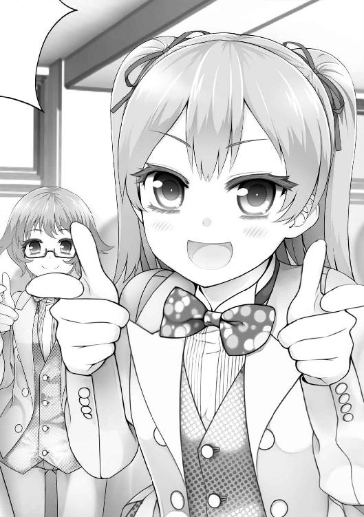

| 俺がお嬢様学校に「庶民サンプル」として拉致られた件: 3 (一迅社文庫) | |
| 七月 隆文 | |
| (2012) | |
挿画：閏月戈
デザイン：百足屋ユウコ（ムシカゴグラフィクス）
１話 恵理はいまラジオの収録ちゅうです♪♪
『恵理と！ みさきの！ どこまでもいっちゃいますっっ！』
ヘッドホンから、オープニングのジングルが流れる。
花江恵理は赤いＣＵＥランプの点灯を確認、ストップウォッチを押し、向かいのパートナーとアイコンタクトをし――第一声を出した。
「おはこん！ 花江恵理です！」
「ちわっす！ 山田みさきです！」
「挨拶バラバラｗ」
「もう三回目だし、そろそろ挨拶決めていきたいね～」
「だね～ｗ」
ネットラジオの収録中だった。
花江恵理は、公人の幼馴染みであり、人気急上昇中の現役女子高生アイドル声優である。
黒髪のロングを後ろでまとめて下ろし、触覚と呼ばれる細い束を頬に垂らしている。いかにもアイドルで、ちょっとブリッ子な髪型だ。
アヒル口で、目力が強い。ころころ笑う表情で、目力ビームをプリズムみたいに散らす。ビジュアル面では、すでに業界ナンバーワンの呼び声も高かった。
「というわけで、みんなから挨拶のアイデアを募集します！」
「送ってくれたら、えりりん、とってもうれしいですぅ」
恵理は、きらりんっとキャラ声を出す。
ブリッ子押しが恵理の芸風だ。そこを声優ファンにいじらせつつ、だがそれがいい、ひょっとしたら本当に天使かも......？ と可能性を匂わせるのが彼女のセルフプロデュースで、実際うまく行っていた。
ガラスの向こうにいるスタッフたちが、にやにやしている。
――よし。
あれがリスナーの顔だと思って、手応えを感じた。
「みさきちも、うれしいですぅ」
――安易にかぶせてくんなよ。
相方の反応に、恵理は心の中で毒づく。
――そこは『お金取れる声だ！』とか『出たよブリッ子ｗｗ』とかいじって、恵理をおいしくさせるとこだろーが！ おこぼれ拾いにきやがって。クソが。
ものすごく、自分の都合だった。
「この番組は、一迅社の提供でお送りします☆」
「おつかれさまでーす♪」
二本録りの一本目を終え、恵理は営業スマイル全開でブースから出た。
プロデューサーをはじめ、関係者一同がにこにこ愛想のいい笑顔で迎える。自分がいま売れていることを実感できて、恵理はとっても気持ちがいい。
「『ヒラメちゃん』のコーナー、すごくよかったよ」
「ほんとですかっ☆ でもでも、すっごく恥ずかしかったんですよぉー？ ほんとあの無茶ぶりコーナーやめてくださいよぅ～」
プロデューサーに媚び媚びで応える。偉いオジサンにはこれぐらいベタなのが案外効くというのもあるが、自分のルックスとキャラ付けだからこそ成立するものだと恵理は自覚していた。
「おつかれさまでーす♪」
「お、お疲れ様です」
ＡＤにも愛想全開で挨拶（周囲への性格の良さアピール）しながら、廊下に出て、トイレに向かう。
個室に入り、便座に座って............長い長いため息を吐く。
独りきりの安全圏に入り、恵理はようやくスイッチをＯＦＦにした。
――クソが!!
てめぇ山田ァ！ こっちが写真集の告知してるときに「わーすごいねー」って、あからさまに気の抜けた声出してんじゃねーよ!! そういう響きは、鋭いリスナーにはバレてんだぞ!? こっちはテメーのキャラソンの話、ちゃんと乗ってやっただろ！ 他人の仕事の話が面白くないのはお互い様だけど、ウチらの仕事はキャッキャウフフのお花畑だろ！ 客どもに夢を見せてやることだろ！ 咲かせろ！ お花畑を全力で咲かせろ!! あと佐世保（ラジオ構成作家）！ なんだあのつまんねーメール！ どんなメール選んだら盛り上がるとか、膨らまねーとか想像しろよセンスねぇなあ!! どんなメール採用するかで、そのあと来るメールの質が変わってくんだよ！ なんで恵理がこんなこと考えなきゃいけねーんだ!!
心の中で怒濤の叫びを上げながら、手元のスマホで『恵理はいまラジオの収録ちゅうです♪♪』とアニメの音響監督にメールの返事を打っていた。
そのとき、トイレに相方の山田みさきが誰かとしゃべりながら入ってくる。
「まーちょっとしたことなんだけどさー」
「なになに？」
この声は、倉田（ほぼ同期声優）だ。別番のゲストか何かで、ばったり会ったんだろう。
「このラジオの構成作家が、用事のないメールしょっちゅう送ってくんの」
「えーどんな？」
「『今、何やってんだ？』みたいな」
「うわ、超ヤダー！」
「もうカレシ気取りかっての」
山田がへらへら笑って言う。
――バカが!!
同業者に話した時点で、その話は絶対、他に洩れてくぞ！ 下手すりゃ本人の耳に入んぞ!? バカが！ バカが！ なんて迂闊！ 二度と仕事こねーぞ!! いいだろお前に好意持ってんだから！ うまく利用しろよ！ ちなみに恵理には来てねぇ！ くそ佐世保、ああいうのがタイプか！ べつにいいけどあいつ出世しなそうだし！ それより山田、お前、芝居もトークも並だし、そんなんじゃ三年後、消えてんぞ!? このサブカル業界屈指の修羅界・女性声優業界を生き残れねーぞ!!
イライラする。
イライラする。
苛立ちを感じながら、恵理はいつのまにか、とあるメールを開いていた。
それは、今から二週間も前に届いた、幼馴染みからの短いメールだ。
『俺は元気でやってる。何人か友達もできたし、心配するな』
――してねーよ！ クソが!!
幼馴染みの神楽坂公人は、先月の授業中、メイドに拉致されていった。
そのあと『別の学校に入ることになった』とだけメールが来た。
家族に話を聞こうにも、家のリフォーム工事で別の仮住まいに移ったらしく、行方がわからない。
公人とは一度だけ電話したし、そのときのニュアンスから、事件に巻き込まれたとかではないっぽい。
ただ......そのときの電話に出た女が「～ですわ」みたいな、やたらお嬢様口調だったのが気になる。
連れ去ったメイドといい、なんだか昔あったあの出来事に結びつく感じがして.........
「あークソッ!!」
思わず声が出た。
あわてて口を押さえる。
耳を澄ますが......幸い、誰もいないようだ。
――クソっ......。
こんなにイライラするのは、公人がいないせいだ。
ローキックでストレス解消もできないし、部屋はどんどん散らかっていくし、コンビニにパシらせることも、あいつの作ったごはんを食べることもできない。
何もかもあいつのせいだ。昨日アフレコでリテイク食らいまくったのも、あいつのせいだ。
公人のメールをみつめながら、恵理はビキビキと血管を浮かせている。届いてから五〇回は見ているが、そのたびにむしゃくしゃした。
――あいつ、どこで何やってんだよッ!?
２話 歪みねえなッ！
俺は、寮の自室で『ガチホモ★レスリング』という動画を観ていた。
『―――ッ!!』
『オゥマイショルダッ!!』
パンツ一丁のマッチョ二人組（白人）が、関節技をかけ合ったり、紐パンを引っ張り合ったり、組んずほぐれつしている。
......いや、違うよ？
ネットで人気だからだよ？
放課後、俺はケータイで動画サイトを観ているのだった。
ガチホモ★レスリングは、タイトル通りのきわめてニッチな映像なのだが、これがなぜか大人気らしく、再生数はなんと五〇〇万オーバーだ。
再生される動画上に、大量のユーザーコメントが流れている。
マッチョの叫び声に『――ッ！』と字が付いてる時点で面白いが、なんといっても目を引くのが、職人による英語音声の「空耳字幕」だ。
『くりぃむしちゅー田中ァ!!』
――誰だよ田中ｗ
でもたしかに、そう聞こえる。
こういうコメント芸と一体になって、ガチホモ★レスリングは独特なシュール感を持つネタ動画になっていた。
今日初めて見たけど、普通に面白い。
ぺちぃん！（マッチョがマッチョの尻を叩く）
『美顔器ッッ！（空耳）』
――でも、自分の部屋でホモ動画をニヤニヤしつつ視聴してるって、端から見るとかなりヤバい構図だよな......。
頭の片隅にそんな考えが浮かぶ。ただでさえ俺は、この清華院で『マッチョ好き』という設定を負わされているのだ。
『ア―――ッ！ ア―――ッ！』
もしこんなところをお嬢様に見られでもしたら、完全に取り返しがつかなくなるな。
アハハ。
俺は、愛佳に向かって切腹の衣装で土下座していた。
愛佳はベッドに腰掛け、腕組みしつつ俺を見下ろしている。
セミロングのツーテール。ぱっちり大きい、ややつり目のまなざし。
活発な小型犬っぽい、あまりお嬢様らしくないお嬢様――それが天空橋愛佳だ。
白装束で土下座する俺と、ベッドから見下ろす愛佳の間に、ケータイが置かれている。
『ノー！ ノォ――ッ！』
『歪みねぇなッ！（空耳）』
晒し首のごとく、動画が再生され続けていた。
「......違うんだ」
「何が違うの」
愛佳は「どうしてこんな子に育ってしまったのか」と顧みるカーチャンみたいな、怒りと悲しみの混ざった瞳を俺に注ぎ続けている。
誓って言うが、俺はホモじゃない。
俺は、この名家のお嬢様だけが集う、一般社会から秘匿された清華院女学校に《庶民サンプル》として拉致られてきた。
選ばれた大きな理由が、女性に興味のない『マッチョ好き』というものだった。
もちろん誤解なんだけど、それがバレると俺は、お嬢様たちの貞操を守るため外科的手法でお世継ぎが作れない体にされてしまう。
だから俺は、自分の性別を守るため、教職員に対してマッチョ大好きという嘘をつき続けないといけないのだった。
とはいえ、お嬢様たちにまでそれを広めたくはない。
「ねえ、何が違うの」
「......この動画は、庶民の間で大人気なんだよ」
ぺちぃん！ ぺちぃん！
『関係ないねッ！（空耳）』
「ウソよ」
愛佳が、キッと睨む。
「いくらなんでも、そんなのに騙されるわけないじゃない」
「ほんとだって。ものすごい数、再生されてるんだって！」
「ハッ。ありえないわ。だとしたら、庶民はみんな変態ってことになるじゃない。ありえないわ！」
ハァハァッ......（ぺちぃん！）アッ！ （ぺちぃん！）オウッ！ オオォォォ―――――巣鴨プリズンッ！（空耳）――――――カズキ―――ウゥン―――カズキくん縞パァアン――――ッッ!!
「そんなウソついて恥ずかしくないの？ 他の庶民に謝りなさいよ！」
......俺はただ、真実を言っているだけなのに。
でも、説得できる気がこれっぽっちもしねぇ。
地動説で島流しにあったガリレオの気持ちがものすごくわかった。
「だいたいアンタ、前にもヘンなこと叫んでたわよね」
ああ、みんなの前で『叶うならマッチョのお尻の筋肉に挟まれながら生きていきたいよッ!!』って叫んだことだな？
「あのときは『動揺してて自分でも何を言ったか覚えていない』って主張してたけど......ほんとは、違ったのね」
「............」
「とにかく、もうじきみんな来るだろうから、改めて話を聞かせて」
――ヤバイ。
こいつにどう思われようが知ったこっちゃないが、麗子には誤解されたくない。白亜にもだ。可憐は......まあ、あいつはいいや。
「というわけで、これはいったん預かっておくわ」
愛佳が、俺のケータイに手を伸ばす。
「違うんだ、聞いてくれ」
俺はとっさに愛佳の手を取った。
全員が来る前に、誤解をとくハードルが一番低いツンピュアさんだけを攻略し、収めるべきだ。
「最初から説明する」
俺は、あらん限りの真剣みを持って、愛佳にぐぐっと迫る。
「............」
手を握られたまま、愛佳はなぜか顔を赤らめている。びっくりしたんだろう。ともあれ、話を聞いてくれそうになった。
「まず、はっきり言うぞ」
「.........う、うん」
「俺はこういうムキムキのマッチョなんか好きじゃなくて、普通に女の子のことが好――」
ガチャッ。
「洗濯物をお持ちしました（九条さん）」
「否、愛してる！ 俺はマッチョをこの地球よりも愛してるッ!!」
俺の専属メイドである九条さんが、畳んだ洗濯物を抱えながら入ってくる。デフォルトの蔑んだまなざしを俺に向けて、
「知ってます」
わきを通り抜けざまに言い、タンスに向かって行った。
俺は、愛佳に向かって五体投地していた。
五体投地とは、全身を地面に投げ出し、這いつくばった姿勢で祈る仏教の作法である。
愛佳はベッドで腕組みしながら、九条さんの写輪眼を移植したようなまったく同じ冷たい眼で俺を見下していた。
額に汗がにじむ。
どうしよう。どういう理由なら最小限のダメージで切り抜けられる......？
「............レスリングに、興味があってさ」
「男同士が裸でぶつかり合うから？」
「いや、そうじゃなくて、純粋に――」
「なら、なんで最初から言わなかったの？ 庶民に人気とかウソついて」
こんなときだけ鋭くなりやがって――！
「.........恥ずかしかったんだよ」
「マッチョを地球より愛してることが？」
「じゃなくて......――そう、占い！ 占いで運勢最下位って書いてたんだよ！ その解消法がレスリングでさ！ 男のくせに占いそこまで信じてるってのが恥ずかしくて！ ......それで......」
自分で言ってて苦しすぎる。
「占いっ!?」
愛佳が、瞳を輝かせた。
「庶民の占いって、どんなの!?」
全力で食いついてくる。
......どうやら、助かったっぽい。
３話 枝豆は、未成熟の大豆だ
というわけで、今日の庶民部は占いをすることになった。
庶民部とは、愛佳の「クラスの人気者になるため庶民文化をマスターしたい」という個人的な目的で創設した部だ。
今はなんやかんやで部員が五人いる。今日はまだ来てないけど、じきに集まるだろう。
部ではこれまで、愛佳の『人気者化計画』――ぼっち脱出作戦を二回試みていて、先日遠足で行った《庶民ランド》のときはうまくいきかけたんだけど、ぎりぎりで失敗。俺と愛佳が付き合ってるという誤解が発生するおまけまで付いてきた。
もっともその誤解は、委員長の麗子が速攻で消してくれたんだけど。いやあ、あの手際はすごかったなあ。
そして結局、愛佳は今もクラスでぼっちだ。
「それで、庶民の占いってどんななの!? どうするの!?」
愛佳が、きらきらした瞳で聞いてくる。やっぱ女子が占い好きっていうのは、お嬢様も同じなんだな。
「ケータイでやるんだよ」
「ケータイで!?」
愛佳が、びっくりする。
「ケータイって、そんなことまでできんの!? すごすぎない!?」
そんな驚くことなのか。
まあ、たしかにこれって、冷静に考えるといろんなことができるよなぁ......。
とか思いつつ、メニューの『占い』を選んで、飛ぶ。実は俺も初めてだ。
「見せて、見せて！」
愛佳が、横からのぞき込んでくる。――って近ぇよ。
学校側から、お嬢様をネットに触れさせることは禁じられてるんだけど......まあ、占いページくらい、いいか。
トップページには、いろんな占い師のピックアップとともに、アクセスランキングの項目があった。
「あ、アクセスランキングなんかあるんだな」
「なにそれ？」
「人気順だよ。どの占いが人気かってのが載ってるんだ」
「じゃあ、一番のやつにしましょ！」
「ああ」
ランキングに飛んでみた。
『１位 行列の占い師がついに登場！ 新宿二丁目のママ』
ただのオネェ店長みたいだ！
ページに飛ぶと、おすすめメニューがずらっと並んでいた。
『あの人は私のこと、どう思ってる...？』『容姿まで当てちゃうわ！ あなたがもうすぐ出逢う運命の人』
やっぱ恋愛メインなんだな。
「わー......うわあー......」
隣の愛佳が、新しいおもちゃをもらった子供みたいに瞳をキラキラさせている。そんな様子を見ていると、正直悪い気はしない。
占いは、結果を一部無料で見れて、全部見たいときに有料化するシステムらしい。
『完全無料！ ずばり言っちゃうわよ？ アナタの基本的性格』
おお。性格診断が無料なんて、ママ太っ腹だぜ。
「『完全無料』って、どういうこと？」
「お金が、かからないってことだ」
「へー」
あんまりわかってない反応。お嬢様かつ清華院で暮らしているせいで、お金という概念が希薄なのだった。
恵理だったら「クソが」って言うとこだろうな。
「あたしの性格を占うってことよね？」
「やってみるか？」
「うん！」
そういうことになった。
愛佳の名前と生年月日を入力し、鑑定ボタンを押した。
占い師の写真を使ったフラッシュ画像が出る。
『ようこそ、ママの店へ......』
ほんとにお店じゃねーか。
スキップし、鑑定結果に飛ぶ。
「どう？ どうっ？」
愛佳がさらに密着してきた。胸がぐいぐい当たってるが、ぜんぜん気づいてないみたいだ。
いくらぺたんこだからって、やわらかい感触がまったくないかって言えば、そんなことないのだった。くそ、愛佳のくせに！
俺は腹立たしく思いつつ、なぜか体を動かそうとか声に出して指摘するということができないのだった。
結果が表示された。
『愛佳は、基本的には繊細だけど、ときに大胆になることもあるわね？』
それ、どっちとも取れる内容じゃねーか。
「当たってるわ!!」
やっぱりこいつは、コロッと引っかかった。
『心の壁が薄いっていうのかしらね。だから素直すぎたり、ちょっとしたことで傷ついちゃったりするのよ。その分、人を思いやる気持ちがあるわ。マイペースで、同じことを繰り返すのが嫌い。ひらめきが冴えてて、それで人生渡っていくタイプね。好きな人には尽くす方☆』
「ああ、でも、わりと当たってるのか......？」
「すごい！ すごい!! なんでわかんの!?」
愛佳は大興奮だ。
「ほんとびっくりよ！ 生年月日入れただけでこんなに詳しく、しかも一瞬で結果が出るなんて......！ あたしたちの占いは、本で星座とか見るだけなのに！」
そうか、ネットがないってことは、こういうコンピューターの占いもないってことだもんな。
「庶民の占いってすごい!!」
「あ、ラッキーカラーが書いてるぞ」
「え!? 見せて見せてっ！」
液晶に食いつく。
「――緑か！」
愛佳が自分の服をチェックして、そわそわしだす。
「どうしよう、緑色がいっこもない！ 緑色のもの付けなきゃ......!!」
「落ちつけよ」
「緑、緑色のもの......ええと......ええと............――あっ!!」
ダッシュで部屋を出ていった。
......やれやれ。
少しして、ダッシュで戻ってくる音が聞こえてきた。
バンッ!!
勢いよくドアを開け、愛佳が入ってきた。
緑の全身タイツを着ていた。
「どう!?」
どうしてそうなった――。
「......なにそれ？」
「去年の発表会で使ったのよ！ 『森の精霊』役で！」
絶対『木・Ａ』みたいなポジションだと俺は確信した。
頭まですっぽりかぶった全身タイツ姿で、愛佳はご機嫌そうにふわふわ動く。
「これだけ緑で固めれば、ラッキーになること間違いなしだわ！」
輝く表情で、忘年会みたいな醜態をさらしているツンピュアさんに、俺は、俺は......
「じゃあ、顔も緑にしないとな」
段ボールを緑色のマジックで塗った仮面（もののけ姫みたいな図柄）をかぶせた。
「そうね。ここまできたら、徹底すべきよね」
もののけがしゃべってるみたいだった。
「ねえ、手のひらはどうする？ ここも何かした方がよくない？」
「いいぞ愛佳。素晴らしい指摘だ」
「そ、そう？」
もののけはうれしそうだった。
「どうしたらいい？」
「俺に任せろ」
給湯室の冷蔵庫から、さや付きの枝豆を持ってきて愛佳の両手に握らせた。
もののけの仮面をかぶった全身緑色タイツの愛佳が、両手のさや付き枝豆をみつめる。
「なるほど。これで完璧ね？」
「ああ。一つ、提案があるんだが」
「聞くわ」
「その枝豆を持ちながら、こう、ステップを踏んで『豆、豆ェー！』とひたすら連呼してくれ」
「......なぜ？」
「庶民に伝わる幸運を招く踊りなんだ。毎年、節分の日に行う」
「節分？ 私たちは豆をまくんだけど、庶民はそうなの？」
「ああ。今日は節分じゃないが、それでも五割ぐらいの効果は見込める。今、お前の手には、ラッキーカラーの枝豆。やるしかない」
「でも、節分は大豆じゃないの？」
「枝豆は、未成熟の大豆だ」←本当
「知らなかった!!」
「さあ愛佳、踊れ！ 自分の手で幸運を踊り取るんだ!!」
「うん！」
愛佳は枝豆を構え、エイヤットット、とステップを踏みだす。
「豆、豆ェ――！」
「いいぞ、愛佳！」
「豆、豆ェ――！」
もののけの仮面を付け、緑の全身タイツで枝豆を手に踊る愛佳は、おかしなシャーマン、否、豆神様と化していた。
「豆ェ―――ッ！」
「そこで、ゲッツ！」
「ゲッツ!!」
わさっ！ と枝豆を突き出した。
「もう一度、最初から！」
踊りながら、愛佳のテンションがどんどん上がっていた。
ヤバいぐらいの全力で、豆神様が踊り狂う。
「豆、豆ェ――――ッ!!」
ガチャッ。
麗子が、ドアを開けた。
.....................................................................................................................。
ドアノブを握る麗子、うしろにいる白亜、可憐が、豆神様を見て、全身に緊張をみなぎらせている。
「............そちらは、どなた............？」
４話 愛佳さんは友達が多い
『麗子は、多くの人とのつながりで生きていく人ね。まわりから見て、聞いて、そこから学んでいく人よ。観察力と分析力が優れてるから、マネジメントの仕事をすると成功するわ。ただ、思い込みの激しいところは注意して？ 恋愛は、だんぜん追いかけるタイプ☆』
「すごい！ ものすごく当たってる気がいたしますわ！」
麗子が、手のひらを合わせながら感嘆する。
ゆるく巻きの入った長い髪、気品とやさしさをにじませる整った顔立ち......白薔薇を思わせる高貴で清楚なお嬢様オブお嬢様。それがうちのクラス委員長、有栖川麗子だ。
「ね!? 庶民の占い、当たるでしょ!?」
愛佳が、自分のことみたいにアピールする。ちなみに、全身タイツのままだ。
麗子と並ばれると、つい「雑種」と呼びたくなる。
ああ、俺？ あのあと愛佳にボコボコにされたけど？
「じゃあ次は、白亜を見てみるか？」
いつもどおり、俺の膝の上に座っている白亜に尋ねる。
中二だけど、見た目は一〇歳ぐらいにしか見えない。あごのラインで切りそろえた髪、透明感のある瞳。数学をはじめ、学会での賞や数々の特許を取得し、学内に専用のラボまで持ってる天才だ。
俺の手からビスケットをかじりながら、小さな頭でこくん、とうなずいた。
『白亜は、バランスを取る人なの。積極性と消極性、関心と無関心、そういう相反したもののバランスを絶妙に釣り合わせるのよ。物事に対して、とても正直であろうとするし、そうすることで人生が開けるタイプね。学者、芸術家、どちらにも向いているわ』
「当たってるわ!!」
「庶民の占い、すごいですわ！ すごい文明ですわ!!」
愛佳と麗子が、すごいテンションではしゃいでいる。
そのとき、白亜がくるりと体をひねって俺を見上げてきた。
色素の薄い瞳が、どう思う？ と問いかけているみたいだった。
「まあ、けっこう当たってるんじゃないか？ 『学者に向いてる』のあたりとか」
「............」
白亜は何も言わず前に向き直って、また、あむあむとビスケットをかじりだした。
「――くだらない」
可憐が言った。
「占いなどで私の何がわかるというんだ？ 私は絶対、そんなくだらないことに現を抜かしたりなどしない」
「だったらケータイ取ろうとしないで、手を放してもらえませんかね？」
「馬鹿者！」
「なんで俺、怒られてんの？」
黒髪のストレート、切れ長の目をした武家の娘みたいな顔立ち。
そして、腰に提げた日本刀。
神領可憐は、格ゲーの世界から出てきたようなやつ（威力重視・やや重量タイプ）だった。
「......しかし、だ。古、占いは戦において重用された歴史がある。妖を祓うかの陰陽師も、占い師の一面を持つ。ゆえに、いたずらに自らの世界を狭めてはならない――そうだな、神楽坂？」
「俺は何も言ってねえ」
いろいろめんどくさい奴だが、太ももフェチとして、こいつのむっちり肉づきのいい太ももには敬意を払わざるを得ない。太ももだけは認めている。
「つまり、お前もやりたいってことだろ？」
「武道の一環としてだな！」
「はいはい。で、誕生日は――痛てえ!?」
鞘で殴られた。
「まあ、私のことだから？ 気高く孤高な剣士とか、晩年の宮本武蔵にそっくりとか、そんなのだろう」
んな結果出ねーよ。メインターゲットのＯＬに向かって宮本武蔵とか、どんなだよ。
『可憐は、とても寂しがりやね。いつもまわりが気になって仕方がないタイプ。おっちょこちょいで、よく慌てて失敗するんだけど、笑って許されちゃう得な人。恋愛は受け身ね。とっても乙女。女子力の高さが、あなたの最大の魅力よ？』
「な......何かの間違いだッ!!」
いや、けっこう当たってると思うぞ？
「ちょっと貸してみろ！」
可憐が、俺のケータイをひったくる。
「貴様がやるから、そんなふざけた結果が出るんだ。私がちゃんと自分の手でだな.........ん？」
じっ......と液晶をのぞき込む。そこにある、お勧めの占いメニュー。
「......『気になるあの人との相性診断』」
その瞬間、部屋の女子全員がケータイを見た、ような気がした。
「庶民部の活動をより円滑にしていくため、互いの相性を知ることは、とても有意義なことと考えますわ」
麗子が、キラキラと委員長オーラを振りまきながら演説する。
「そうね（愛佳）」
「一理ある（可憐）」
「............（白亜）」
女子陣が、いつになくまとまっている雰囲気だった。
この俺を入れた五人が、庶民部のメンバーだ。
「そこでこの、庶民の誇る『ケータイ占い』を活用しようではありませんか」
麗子が笑顔で、俺のケータイを指し示す。
「ただ、異性との相性しか占えないようですので、公人さまと、わたくしたち一人一人のカップル診断を用います。他の方法がない以上、仕方のないことと存じますわ」
「そ、そうね。仕方ないわね」
「うむ、仕方ないな」
「............」
なんだろう、このまとまり。
まあ、今日の部活というか、お遊びとしてはぜんぜんいいと思うけど......
......なんか、空気が重いというか、微妙に張りつめてる感じがする。
「では公人さま？ 始めて下さいませ」
なんだろう。いつもの麗子スマイルが、ちっとも癒されない。むしろ、オリンピックのプレーヤーに「では始めて下さいませ」と促された審判みたいな心地だ。
「あ、あのさ、なんか空気、ヘンじゃない？」
「はい？」
「いや、なんでもないです......。じゃあ、麗子から占うな？」
「えっ!?」
麗子が、ビクッとなる。
「どうした？」
「いえっ、そのっ......―――あ、愛佳さまからで！」
「ええっ!?」
今度は、愛佳がビクッとなる。
「あいうえお順ですわ！」
「ちょっ、アンタ......！」
「じゃあ、愛佳との相性からな」
二人がこうなると長いので、俺はさっさと入力を始めた。
「待っ......！ ......っ！」
諦めたようにおとなしくなる。入力する俺を見ながら、そわそわ落ち着きなく動いていた。
結果が、出た。
――おっと、これは......。
「どう!? 出た!?」
「ああ。点数まで出るんだな」
「な、何点!?」
「えーと......」
とたん――複数の強いプレッシャー。
愛佳、麗子、可憐が「女の子の占い遊び♪」の域を超えた目つきで、俺に注目していた。
「え......なんで？」
「いいから!!」
「早く仰って下さい!!」
「さっさと言え!!」
ぽすっ。
「白亜、なんで俺のひざ叩いたの？」
「............」
無反応。
「えーと、俺と愛佳との相性は......」
80点
最初会ったときに「ビビッ」ときて、そのまま一気に恋に落ちる――愛佳と公人は、そんなことが起きても不思議じゃないほど強い縁を持ってるわ。最高のカップルになれること、間違いなしよ？
「やった――――――――――――――――っ!!」
愛佳が、拳を突き上げた。
次の瞬間、はっと口を押さえて、部屋から飛び出していく。遠ざかりながら、何か言ってるのが聞こえた。
戻ってきた愛佳は、もったいぶるように腕組みしながら、
「さ、さっきのは、自分の運勢かと思って喜んじゃった！ 公人との相性だったわよね、失敗失敗！ そっかー公人との相性だったかー。あーあ、やれやれ！」
それから愛佳は何度も「やれやれ」と言ったり「ふぅっ」とわざとらしく溜め息をついたりした。
何がしたいのか、よくわからない。
「公人さま！ 次はわたくし、お願いいたしますわっ!!」
麗子が、ずいっ！ と詰め寄ってくる。
「よく考えたら、あいうえお順なら『有栖川』のわたくしが最初でしたわ！」
「はぁ」
「あー次は麗子やるんだー？」
愛佳が、髪の毛をくるくるいじりながら、
「いい点が出るといいね？ でもま、80点なんて高いのはなかなか出ないと思うけど。うん、ちなみにあたしの点数なんだけどね、80点」
何キャラだよ、お前。
「ぐっ......!? 公人さま、早く結果をお願いしますわ!!」
麗子がものすごくムキになる。何にしたって、愛佳に負けるのはいやなんだろう。この二人は、本当に仲が悪い。
そのくせ、クラスでぼっち状態になっている愛佳と、委員長の麗子は、体育で二人組になるときとか、自動的にペアになってしまう。まさに泥沼だった。
麗子の生年月日を入力し、結果を出す。
――おおっ！
「い、いかがでした......っ!?」
90点
麗子と公人は、結婚の相性が最高ね。公人となら、必ず幸せな結婚生活が送れるわ。
男女の相性で一番大事なのは結婚の相性だって、ママ思うな。
「――～～～」
翼が生えて昇天する麗子の幻影が見えたような気がした。
「ええええ――――っ!?」
愛佳が、不満全開な声を上げる。
「まぁまぁ、90点ですの。しかも『結婚の相性が最高』......。まぁまぁ。まぁまぁまぁ」
全身からキラキラした光を発している。
「間違いよ！ 入力ミスじゃないの!?」
「まぁ、愛佳さまったら」
鑑定表示を噛みつくようにチェックする愛佳に対し、麗子が白薔薇の微笑みを浮かべる。
「お互いよい結果が出て、幸いでしたわね。わたくし、とても嬉しく存じますわ。ええと、愛佳さまはたしか......80点でしたわね？」
「ぐッ......!?」
あの二人はほっといて、次に移ろう。
「白亜はどうする？ やるか？」
俺のひざに座ったまま、こくん、とうなずいた。
入力する。白亜との相性って、どうなんだろうな？ まったくわからない分、興味があった。
結果が――出た。
50点
白亜と公人の相性は、良くも悪くもないって感じね。お互いに共通してるものがないから、接近することもないし、そうなってもすぐ離れることになりそう。まずはお互いを理解することから始めて。
特に白亜は誤解されやすいタイプだから、もっと【自分のことを知ってもらう努力】が必要よ？
ちなみにママもよく「お前、オッサンじゃねーか」って誤解されるわ？
......よくない結果が出ると、ちょっと気まずいな。
「まあ、占いだからな。――お茶飲むか？」
白亜はじっと、鑑定結果を見ている。
「白亜？」
一拍置いて、振り向いてくる。
「お茶、飲むか？」
ふるふる。首を振った。
「そっか」
「......白亜さま、新しいお菓子をお持ちしましょうか？」
「そ、それがいいわね！ あたし取ってくる」
麗子と愛佳が、妙にやさしかった。
べつに白亜も、そんなに気にしてないと思うけどな。悪いってほどじゃないし。
「......で、可憐はどうする？」
可憐はふん、と気難しげな表情をしつつ、
「私だけやらない、という訳にはいくまい」
「いや？ べつに無理にやんなくていいんじゃね？」
「......ッ!?」
「あー悪かった悪かった。やろうな」
こいつはこう見えてすげー寂しがりやだから、一人だけのけ者ってのには耐えられないのだ。
「私は別にやりたくないんだからな！」
「あーはいはい。俺がやりたいんですー」
「!? そ、そうなのか......？」
なぜか可憐が赤くなった。
俺はさくっと入力し、結果を出した。
０点
一緒にいたら、公人が死ぬわ。
「死!?」
「貴様ッッ!!」
「なんで斬りかかんだよ!? って、占いすげえ当たってる!!」
「..................ふん。どうでもいいことだ」
ブスッ。
「私と貴様の相性が悪いことなど、占うまでもなく、わかりきったことだ」
ブスッ。 ブスッ。
「そもそも......」
「日本刀で絨毯刺すの、やめないかな!?」
とりあえず全員の占いが終わったので、接続を切ろうとしたとき――
「――あ、すまん。お前の入力、間違ってた」
「！ 何」
「誕生日がずれてた。えーと、九日にして.........よしと」
結果が表示された。
「！ ......えっ、マジか......？」
「なんだ!? どうした!?」
100点
宿命の相手！ 可憐と公人は、そうとしか言い表せないほどパーフェクト！ 魂の深いレベルで結びつくことができる究極の相手よ。
ただ、最初はピンとこないことがあるかも。彼を逃したら一生の後悔よ！ 可憐は明日からでも積極的にアタックしなさい！ 【自分の特技をアピール】して、おもいきりぶつかってみて！
ちなみにママは、町でぶつかった相手から「親方」って言われたことがあるわ？
「..............................!!」
可憐の全身が、ぼんっ！ と赤くなった。
「ひゃ......ひゃくてん......？」
びっくりしすぎて、幼児みたいなしゃべり方になっていた。
「......あぅぅ......」
赤い顔のままうつむいて、もじもじしている。
なんか、ヘンな空気になりそうだ。
「おい、そんな深く考えんなよ。たかが占いなんだし――」
「そうよ!!」
「ぜんぜん当たってませんわ!!」
愛佳と麗子が同時に割り込んできた。
「こんなの、アテになんないわよ！」
「そうですわ！ アテにしてはいけません！」
――さっきまでさんざん「当たってる」って騒いでたじゃねーか。
「だから――もっと当たる占い師を捜すべきよ！」
「そのとおりですわ！」
「占いの否定には行かないんだ」
「貸して！」
愛佳が、俺のケータイをひったくる。
そして、愛佳と麗子が他の占いを漁り始めた。
「......『二人は前世から宿縁のある最強の関係』......そうですわ！ この陰陽師の姓名判断、当たってますわ！」
「......『だんだん彼とすれ違うように』――違う！ これはあたしの求める"本物の占い師"じゃないわ......！」
ぶつぶつ言いながら、交代交代にケータイ占いを続ける。
外から入り込めないほどのめり込んだ二人に対し、俺が言えたことは「頼むから『一部無料』の方でやってくれ」ということだけだった。
そして――。
「......『愛佳さんは友達が多い』――違う！ 次！」
「......あ、この占い、まだ試してませんわ......」
気のせいか、愛佳と麗子のいるあたりが薄暗く、陰のオーラが籠もりだしていた。
その間、可憐はなんかボーッとうわの空で、白亜は俺の持つティーカップからお茶を飲んでいる。
占いをしらみつぶしにしていく愛佳と麗子のジプシー姉妹のごとき彷徨はいつまでも続いてしまいそうな感じだったが――さにあらず。
「ついに見つけたわっ!!」
愛佳が、ケータイをぐわっ！ と麗子に突きつける。
「超絶・四柱推命の王先生こそが最強の占い師よ！ ほら見て！ あたしと公人の相性は『何も言うことがない理想の関係』で、あんたと公人は『麗子の独り相撲』だって！ 超当たってるわ！ うふふ！」
「何を仰ってますの？ 二一世紀最後の魔女・カタリン＝イェネー様こそが、真の占い師ですわ！」
麗子がすっかり上達したケータイ両手打ちで、占い結果を出す。
「ほら、ご覧なさい。『公人と麗子は幸せな家庭を築ける、互いにとって最高の相手』。あなたの相性は『愛佳のマイペースに、公人はストレスが溜まりそう』ですって。まるでわたくしたちを知っているかのようですわ！」
「あたしマイペースじゃないし！」
「どの口が仰ってますの!?」
......きっと（というか間違いなく）、俺との相性なんかどうでもよくて、相手より下ってのが嫌なだけで争い続けてるんだと思う。
なんでそう思うかって？ 今この部屋で、俺の存在が完璧、空気だから。
「何よ!?」
「なんですの!?」
また、つかみ合いに発展しかけたとき――
「いいかげんにしないか!!」
可憐が制止した。
こいつがこんなふうにするのは初めてのことで、俺も、愛佳や麗子も、きょとんとなる。
「二人とも喧嘩はやめるんだ。どちらの占いが正しいかで争うなど、みっともないぞ」
諭すように言われ、愛佳と麗子がシュンとおとなしくなる。普段言わない奴が言うと、効果あるよな。
「正しい占いは『新宿二丁目のママ』に決まっているだろう」
「「違うわよ（いますわ）!!」」
台無しだった。
「占いの帝王と呼ばれる四柱推命こそ、唯一信じられる占術よ！」
「誰にでも学べる理論になど、限界がありますわ！」
泥沼の論争が続いていた。
「真の未来予知は、人智を超えた個人の霊能力によってのみ達成されるのですわ！」
「何を言っている！ そんな力が『ねっと』で再現できるわけないだろう！」
「そうよ！ なのになんで『さいと』開いてんの!? おかしくない!?」
「だからといってマニュアルで妥協するんですの!?」
この短い時間にやたら占いに詳しくなってる三人が、ほんのちょっぴりキモかった。
「新宿のママは一位で行列だぞ!? 結果を出している者が最強なのは自明の理だろう！」
「一番人気が最も優れているとは限りませんわ！」
「そーよそーよ！」
............やれやれ。
いつまでも続く言い争いに、溜め息をつく。
そのとき、ゆさゆさ......と肩を揺さぶられた。
白亜が正面に向き合って、じっと俺を見上げている。半ば理由を察しつつ、聞いた。
「どうした？」
「お腹空いた」
だよな。さっきビスケット食べてたが、実はこいつ、なにげによく食う。
「給湯室でなんか作るか」
渡りに船って感じで、立ち上がった。
「芋モチがいい」
「お、あれ気に入ったか。ジャガイモあるかなぁ」
「ホットケーキでもいい」
「よし。じゃあ、一緒に作るか」
白亜はこくん、とうなずき......手をつないできた。
「こうなったら、全員が納得できる占い師を捜すしかないわ!!」
「異議なしですわ！」
「くっ、仕方ない......！」
終わらない論争を続ける三人を置いて、俺と白亜は手をつないで部屋を出たのだった。
５話 俺から白い液体は滴り落ちねーよ！
朝目覚めると、九条さんが超駄作に仕上がった続編映画を観終わったときのような冷めきったまなざしで俺を見下ろしていた。
「目が覚めましたか」
「ああ」
「ずっと目覚めなければよかったのに」
ループしてるんじゃないかと錯覚しそうになるくらい、毎朝同じやりとりだった。
それを打ち破るべく、いつもと違うことを言うことにする。
「あのさ」
「なんでしょうか」
「前から聞きたかったんだけど......なんでいっつもそこに立って、俺が目を覚ますのを見てるんだ？」
起こしてくれるわけじゃないなら、ずっと枕元に立ってる理由もないはずだ。
九条さんは何も言わない。
何も言わない。
黙っている。
「あの......九条さ――」
「あなたの問いに答えなければならない決まりがあるのでしょうか」
「いや、ないけど......」
「残念なことに私はあなたの専属メイドです。あなたを起こすことも遺憾ながら業務に含まれています。本当ならばサボりたいところですが、メイド長という立場上それができないことは無念であり、地団駄を踏む思いです」
「同じような意味のこと、四回言った？」
「癪です」
「五回言った！」
「そこで編み出した妥協点が『目覚めるまで見ている』ということです」
「それ仕事してないよな」
「じっと見ていることが仕事です」
「昔のＣＭみたいに言っても、俺から白い液体は滴り落ちねーよ！」
「それはセクハラですか」
「違うよ！ だからその鋏をしまって!!」
俺は溜め息をつく。
「いや、だからさ......いいよ、それも。着替えの手伝いもやめてもらっただろ？ それと同じで、起こすとかもいいから」
言って、ケータイを手にする。
「これで起きれるし、大丈夫だよ」
「明日からは携帯電話のアラーム機能で起きるということでしょうか」
「ああ。見送りのタイミングで来てくれたらいいよ」
「わかりました」
「うん。そっちの方が楽だろ？ なんだったら、見送りもやめ――」
「では今から、その携帯電話を破壊します」
「なんで!?」
「過剰な機械化は、労働者の敵です」
「お前最初から仕事してねーじゃん!!」
九条さんが溜め息をつく。
「わかりました。そこまで仰るなら、私も本気を出させて頂きます」
「いや、だから無理に――」
「毎朝スケートシューズを履き、あなたの上で本気のトリプルアクセルを跳ぶことによる衝撃で起こします」
「『本気』の置き所がおかしい!? 俺、死んじゃう！」
「さっそく、まおさんを呼んでコーチしてもらわなくては」
「まおさんって誰!? まさかあのまおさんじゃないよね!?」
「私は本気です」
「ならなくていいよ!!」
「では、今までどおりということでよろしいでしょうか？」
「いいよ！」
「そうですか。では、そのようにいたします」
「......え？」
「外に出ていますので、さっさと着替えて下さい」
バタン。部屋の外に出ていった。
「............」
なんだかよくわからないうちに、これまでどおりということになってしまった。
――ま、いっか......。
特に困るわけじゃないし、それに......
なんとなくだけど、毎朝ふんわりとやわらかなものに包まれたような、いい気持ちで起きられるから。
６話 なんで今さら、自分の特技のアピールなんかしてくるんだ......？
「あー腹減った......」
休日の昼、俺は食堂に向かっていた。
ここに来て一番よかったと思えるのが、メシだ。超うまい。
今まで食べたことのないようなものが当たり前に出てくるし、知ってるものでもクオリティがぜんぜん違う。なんかするする食えて、つい食べ過ぎになってしまうほどだ。
舌がどんどん肥えてきてんじゃないかって不安もあるけど、何かと不便な女子校環境にあって、ほとんど唯一の楽しみなのだった。
カップ麺とかも申請して仕入れられるから、食生活に関しては不満なしだ。
寮からの、芝生広場に面した道を進むと、おしゃれな校舎が建ち並ぶエリアが見えてくる。その手前にあるのが、これまた豪華な食堂だ。
と――。
そこの木陰から、可憐がすっ......と出てきた。
普段なら俺も「よう」くらいは言うのだが......なんだ。様子がおかしい。
「............」
可憐は真向かいに立ち、じっと俺を見据える。明らかに待ち構えていた感じだ。
きゅっと引き締めた唇に、緊張が漲っていた。
「どうした――」
斬りつけてきた。
「うわあっ!?」
うしろに飛ぶ。距離があったから、助かった。
「なんだよ!?」
可憐は何も言わず、俺に向かって刀を構え直す。
何!? 幕末!?
あっ、もしかして前に「勝てそうだと思った瞬間に殺す」って言ってたけど、それを実行してるのか!?
可憐が、動く。
「待て！ 待てって!!」
「可憐式剣義――《果断》ッ!!」
振り下ろされた刀から、衝撃波。石畳をえぐり、土を巻き上げながら疾ってくる。
「うわああ――――っ!?」
倒れるように横に転がる。
俺の立ってた場所を衝撃波が通過していく。地面を直線でえぐっていき、池の水を割り、その向こうの木の枝を折った。
なにコレ!? 人類に向ける剣じゃないよ!? アマツとか狩ってこいよ!!
そして、完全によけたと思ってたのに――上着の袖がパックリ切れていた。
倒れたままの俺の上に、可憐の影がぬっと覆った。
真剣なまなざしのまま、俺のパックリ切れた袖を確認し――刀の先端を向けてくる。
絶体絶命――。
「神楽坂！」
「!?」
「私の『特技』は剣だ！」
「.........は？」
「どうだすごいだろう!?」
「............」
.........なんだ？
「な、なぜ黙っている！」
可憐が、刀で鼻先を突いてくる。
「すごいかと聞いているんだ！ どうなんだ!?」
「うん！ すごい！ すごいよ！」
壊れた玩具のように叫ぶ。
「私の特技を見て、すごいと思ったな!?」
「ああ思った！ 思った!!」
「そ、そうかっ」
可憐は刀を引き、鞘に収めた。
「よかった」
何がいいんだ。
なんだ。なんで今さら、自分の特技のアピールなんかしてくるんだ......？
「おおっ、どうした神楽坂。上着の袖が、パックリ切れているじゃないか！」
「お前が斬ったんだよ!?」
「仕方ない、私が繕ってやろう！」
俺の手を取り、引っ張り上げてきた。
「えっ？」
そのまま、ずんずん歩いていく。
「手元に裁縫道具がないな！ 私の部屋に行かねば！ うん、まあいい機会だ！」
わけのわからないことを言いつつ、握ってくる手にはやたら力が入っている。正直、すごい握力で――
「ぃ......痛いっ」
「――！」
可憐が、ぱっと手を放す。
立ち止まり、こっちを向いて、握っていた俺の手を見る。
ふいに顔を赤らめ、じっと自分の手のひらを見る。
「......あの、大丈夫だから」
俺は、おずおずと言った。
「服――これさ、もうじき処分しようかなって思ってたから！」
なんとか逃げないと――俺は恐怖を感じていた。
今日の可憐は、明らかにおかしい。不自然だ。
いきなり「部屋に」って、どういうことだ？ 怖い。最悪、殺されるんじゃないか......？
「その服は、まだ着られるだろう。物を粗末にしてはいけない」
「そっ、そう、かな」
「だから私が――」
「いやっ！ いいよ！ 逆に切れてるのがカッコイイっていうかさ！ 庶民はこういうことするから！」
「しかし――」
「ほんと、いいって!!」
言いながら、俺は一歩、二歩、と後退する。と――
可憐が.........しょんぼりと、うつむいた。
「............そう、か............」
その表情は、本当にがっかりしているようで、哀しそうで―――...
俺は、断れなくなってしまった。
寮の廊下を歩きながら、可憐がやたらきょろきょろしている。いつになく神経質だ。
「......よし、いないな......」
と、可憐がドアを開け、体をすべり込ませる。
「神楽坂、早く入れ！」
「......？」
引きずられるように中に入った。映画で見た不倫現場みたいだと思った。
まあ、男子を部屋に入れるのはやっぱ大ごとなのかな？
「ここが私の部屋だ」
入ってすぐ――畳の匂いが鼻をついた。
和室だった。
畳が敷かれ、押し入れがあり、床の間に『質実剛健』と書かれた掛け軸がある。
木の古めかしいタンス、布のかかった鏡台がなければ女子の部屋ともわからないくらい――素っ気ない部屋だった。
「なんつーか......シンプルだな」
「当然だ。剣の道を志す者に、くだらぬ飾りなど不要。『質実剛健』だ」
びしっ、と掛け軸を指す。
「なるほどなぁ」
「そこに座れ。茶を出してやろう」
「おお」
薄い座布団に座る。
可憐がお茶を淹れはじめる。保温ポットをはじめ、道具が一式、きちっと用意されていた。まるで来客を想定していたふうにも見えたが、いつもそうなのだろうか。
あの急須は、南部鉄器っていうんだったか。古風で、武骨な感じだ。半球形の湯飲みは、薄く渋い色をした陶器だ。
そっか......実はかわいいもの好きってとこばっか見てきたけど、やっぱ基本はこっちなんだな。少し認識を改めた。
「飲め」
「ああ、サンキュ」
出された湯飲みを、手にする。
「どうした神楽坂？」
可憐が、眉一つ動かさず聞いてくる。
「えっ、いや......中......」
「中？ ――っ!!」
可憐が、ハッとなる。
「ゴミでも入っていたか!?」
「いや、ゴミは入ってない.........けど」
「なんだ、人騒がせな奴だな」
可憐が自分の湯飲みを持つ。その内側にちらっとウサちゃん――たぶん俺のとは違うバージョンの絵が、見えた。
......あれぇー......？
「どうした？ 飲まないのか？」
「あっ、ああ......いただきます......」
茶をすする。すごくぬるい。が、うまい。甘みがすごい。
「ぬるいと思うかもしれないが、いい茶葉ほどぬるい湯で淹れるものなんだ。そうしないと苦味などが出て、台無しになってしまう」
可憐が真面目に蘊蓄を語る。
「この玉露になると、適温は五〇度。今のタイミングだと、もう人肌くらいだ」
飲むたび、ウサちゃんが見える。たしかにこれぐらいの温度なら「あったかいピョン」って笑ってられるよな。
「意外か？ 私が茶について詳しいのは。だが武士たらんとするならば、茶で客人をもてなすことも大事なたしなみの一つなのだ」
「............」
「なんだ？ 湯飲みが気になるのか？」
「えっ、だって――」
「そうかそうか、気になるのか」
可憐は、ちょっと得意げにうなずく。
「実はこの湯飲みは、私が自分で焼いたものなんだ」
――だろうな。
「ときどき、やるんだ。轆轤を回し、土と向き合っていると心が落ち着く。よい精神修養になる。武の道を極めるには、剣だけでは叶わない。人としての幅が求められるのだ」
「..................」
俺の中では「今すぐツッコめ」という思いと「めんどくさいから放置しろ」という思いが激しい葛藤を繰り広げていた。
「――さて。裁縫道具を出さねばな」
可憐が腰を上げ、押し入れに向かう。
前に立ち、戸を引いた。
シャッ。
中に、シルベニアファミリーが勢ぞろいしていた。
かわいいウサちゃん人形家族が洋館でくつろいでいて『シルベニアファミリー みんなのおうち♪』みたいな感じだった。
「ええと、たしかここに......」
可憐が、普通のテンションで、がさごそやる。
もっと奥を探すため、『みんなのおうち♪』をよいしょ、と横にずらした。
わざとか!? わざとやってんのか......!?
「......な、なんだ神楽坂」
「へ？」
可憐が振り向いてきた。
「......背中に、お前の視線を感じる」
軽く睨みつつ、足元をもじもじさせている。
「い、いや、気のせいだって。なんとなく見てただけだって」
「そ、そうか」
可憐はどことなく不満げに言って、
「まったく、おかしな奴だ」
と、見つけた裁縫箱を持ってくる。
ピンクのラメで、ウサちゃんデコがされていた。
おかしいのはお前だァ―――――――――――――――っ!!
「上着を貸せ」
「あ、ああ......」
俺はツッコまなかった。
なぜかはわからないが、いつのまにか「ツッコんだら負け」というルールが自分の中に確立されていた。
「実は、裁縫が特技でな」
俺の上着をひざに置きながら、
「フッ......剣の道に生きる私が、繕い物などという軟弱な技をたしなむなど、可笑しいか？」
くっ！ ツッコまない！ ツッコまないぞ......!!
可憐が針と糸を取り出し、糸を針穴に通す。一発で通した。
「よし。はじめるか」
「って、なんで糸がピンク色なんだよ!?」
辛抱できませんでした。
７話 けっして貴様のためではないからな!?
針を刺そうとした可憐が、はたと手を止める。
「......そうだ、忘れていた」
立ち上がる。
「神楽坂......後ろを向いていろ」
「？ なんで」
「いいから！」
抜刀しかけたので、あわてて向いた。
......なんだ？ と思っていたとき――
...............スッ.........シュルッ...............。
布が滑る音が聞こえてきた。
まさか......脱いでるのか!?
どくん、と心臓が鳴る。
......ファサッ。
落ちた!! ワンピの制服、落ちた!!
「......い、いいぞっ」
えええ――っ!?
「えっ、でもお前、今.........下着......」
「!? 何を破廉恥な想像をしている！ い――いいからさっさとこちらを向け!!」
俺は、おそるおそる......向き直った。
ちゃんと着ていた。
ピチッとめの半袖ティーシャツと、デニムのホットパンツ。
制服の下に着込んでたっぽい。
これは......庶民ランドに遠足に行ったとき、可憐が着た服だ。俺があげた形になったやつ。
可憐はムスッと顔を逸らしながら、
「......ど、どうだ？」
「ああ......」
きつめのホットパンツに締めつけられた太ももの「ぷくっぅり」とした余り肉の膨らみ方が絶妙で今すぐ頬ずりしたいくらいだし、一〇〇〇円くらいなら余裕で払う。そこからひざにかけてのラインも完璧で、ぴんと張りのある肌が光を艶やかに照り返していて、とても弾力がありそうだ。それと同時にしっとりと吸いつきそうな質感もあって、本当に文句のない一〇〇点満点の太ももなんじゃないかな。
「いいと思うぞ？ 前も言ったけど」
可憐の唇が、へにゃっと一瞬、変な動きをして、
「か、勘違いするなよ！ 身軽で気に入ってるだけだからな！ 貴様に言われたからではないんだからな!!」
そんなこと思ってねーよ。
「さ、最近、暑いからなっ」
このへんは高原だから六月に入ってもぜんぜん涼しいけど......まあ、感じ方はそれぞれか。
「でもやっぱ似合うな。お前は、そういうのがいいよ」
「――!?」
可憐の喉が、きゅっと鳴った。
脱力したふうにぺたん、と座る。顔をトマトみたいに赤くしながら、
「......まあ、これからもちょくちょく着るかも、な......」
いっちょ前に照れてるらしい。
「だが、けっして貴様のためではないからな!?」
「わかってるよ」
「わかってない!!」
「ええっ!?」
「いや――その......ご、ごほんっ！ さて、縫うか!!」
波を打つように針が動く。
ス―――...っと、水の流れのように糸が引く。
ほぅ......。
と俺は、思わず見とれる。
言うだけあり、可憐の手際は鮮やかなものだった。
俺の上着に視線を落としながら、今まで見たことのない、やわらかい感じのする澄まし顔で淀みなく針を滑らせていく。
糸の擦れるしゅうしゅうという音だけが、昼下がりの和室に染みわたる。
ほのかな日陰のような空間。まどろむような温度。
――いいなぁ。
と感じた。可憐の裁縫している姿。「たたずまい」って言うのかな。それがなんともしっくりきていて、いいのだ。
なんつーか、こいつって意外と......
可憐の手が、ふいに止まった。
「.........何をじろじろ見ている」
「いや、お前っていい嫁さんになれそうだなって」
「――――――――ッ!?」
可憐の目がいっぱいに見開かれる。
「なななな何を言ってるんだ......っ!?」
尻餅をついて、ずりずりと退く。
「なんでそんなビビんだよ」
「そ、そりひゃッ、」
噛みやがった。
俺の上着で、顔の下半分を隠しつつ、
「............それってつまり............」
ミチミチ......。
上着がおもいきり左右に引っ張られてる。
「..................私を、嫁に..................」
小声で何かつぶやきながら、
ミチミチミチミチィ......ッ!!
「だ、だめだ！ 心の準備が！」
「ちょっ、裂ける！ 裂ける!! せっかく直りつつあったものが修復不能になっちゃう!!」
パチン――余った糸を切った。
「よし、できた」
可憐が上着を広げて確認したあと、俺に渡してくる。
縫ったところを見る。きれいなもんだった。
「すげえな。よっぽど近くで見ないと、縫ったとかわかんねぇな」
可憐がドヤ顔で胸を張る。
「どうだ。これが剣に次ぐ私の特技だ」
なんで今日、やたら特技をアピールしてくるんだろう。
「いや、すげえよ。うちのお袋なんか、こんなのできないし」
すると可憐が、つと視線を下ろし、
「......さ、さりげなく御両親の紹介を混ぜてくるんだな......」
「は？」
顔を上げた可憐が、俺の袖口に目を留める。
「下のシャツも切れてるじゃないか」
「え？ ――あ、ほんとだ」
すげえ切れ味。
「し、仕方ないなっ、それも縫ってやろう。貸せ！」
「いや、貸せって......」
これ脱ぐと、上半身裸になる。
「いいよ......」
「よくはないだろう。遠慮するな」
可憐が身を乗り出し、むんずと襟をつかんでくる。
「これ脱ぐと、裸になるんだって！」
「......っ！」
可憐が声を詰まらせる。じわっと赤くなり、
「の――望むところだっ!!」
「はあ!?」
無理やり脱がされた。
「......な、なんだ、男の裸なんて別にたいしたことないなっ。ひたすら真っ黒なだけじゃないか」
「両手で目を覆ってれば、そりゃ視界は真っ黒だろうな」
言われて、可憐がそぉー......と手を下ろす。
光を睨むような目で、俺の上半身を、慎重に見てきた。
無言のまま、だんだんと瞳を開いていく。
「な、なんだよ......」
つい、恥ずかしくなる。
可憐は最初、緊張した面持ちで「うわー、うわー」という感じで見ていたが、ふいに――目つきが変わった。
「細い腕だな」
真摯な、武術家の目だった。
一瞬前の緊張など忘れたように、ごく自然に手を伸ばし、俺の上腕にふれる。
「......たしかに女とは違う。硬い」
さわ......と、手のひらの皮膚を擦らせる。
「が、特段何かを修めているふうではない。......これでどうして、私を圧倒するほど強いのか」
あのときのことは、完全にお前の自爆なんだけどな。
それはそうと、女子に間近で裸を見続けられてるのは恥ずかしいし、じかに触ってくる手のひんやりした感触とか、どきどきする。
可憐の手のひらの皮膚は、普通の女子よりも硬かった。
「......私の手、硬いだろう？」
「え？」
「剣ばかり振ってきたからな」
うつむきながら、自嘲の笑みを浮かべている。
「さっき手を握ったとき、お前『痛い』と言っただろう？」
「............」
「そのくらいの握力もある。腕だって、それなりに締まっている。服装で目立たないようにしているがな」
そうだったのか......。
でも、そりゃそうだよな。
前に持ったことがあるからわかるけど、日本刀ってかなり重い。それをあんな軽々振れるってのは、相当鍛えてるってことだろう。
そして何より、動作がキマってるんだ。長い期間まじめにやってなきゃ、ああはならないよな。
可憐が、自分の両腕をぎゅっと抱く。
「......これでいいのかと、不安になることがある。......特に最近はそうだ。やはり女子として、クラスメイトたちと同じように、か弱くあらねばならないのではないか？ こんな硬い手のひらでは、筋肉のついた腕では――」
「立派じゃねえか」
俺は言った。
断言した。
「......神楽、坂......？」
「お前が今までがんばってきた証拠だろ。硬い手のひらは、豆か？ 腕の筋肉は重い刀を振ってきたからか？ ――ひとつの道を積み上げて、できたものだろ」
俺にはまだそういうのはないけど、幼馴染みの恵理を見てきたからわかる。あいつは声のことに関してだけは真剣で、ひたむきだから。
「そういうのは人に伝わるし、俺にだって伝わる。そうやってできたものっていうのは、なんつーか............美しい、と思う」
俺を見ている可憐の瞳が。
音を立てそうなくらい潤んで、揺れた。
「............か、神楽坂...............っ」
顔をいっぱいに紅潮させながら、ふら......と後ろによろける。
うーん、やっぱクサかったか？
「............お前............ほんとうなのか？ ............私......私のこと............」
瞬間――。
可憐がビクッ！ と跳ねた。
「！ 来るッ!!」
「え？」
「雅が来る!!」
「雅？」
「妹だ!!」
妹？ ......まあ言われてみりゃ、姉妹で同じ学校に通ってるなんて普通のことか。
「今すぐ隠れろ!!」
立ち上がり、俺の手を引く。顔が真っ青だ。
「ちょ、どうした？ 妹だろ？」
「雅にこんなところ見られたら、お前は間違いなく五ミリずつハムのようにスライスされながら殺されてしまうぞ!!」
「どんな妹だよ!?」
そのとき、廊下から「トットット♪」と、独特の弾む足音が聞こえてきた。
可憐に、押し入れに突っ込まれる。
可憐も飛び込んできて、ふすまを閉めた。直後――
ガチャッ！
「雅が参りましたわー！ お姉様を世界一愛する妹にして、将来の夢はお姉様と二人きり他に誰もいない森の奥深くのお家でとろとろ抱き合いながら永遠に過ごすこと！ それを三歳から一五の歳まで変わらず持ち続け、実現までのロードマップを着々と作成している、ちょっぴり甘えん坊の妹、中等部三年主席・生徒会長の雅が参りましたわ――!!」
めっさ濃いキャラきた――――――ッ!?
押し入れの暗闇の中で、可憐の怯えた気配がした。
ぼんやり浮かぶ体が、震えている。
そして俺も―――奮えた。
可憐の太ももに、顔が挟まれつつあった。
襖にもたれて三角座りっぽくなってる可憐の股に、両手が背に回った俺が、ダイブしようとしてる体勢。
広がる仄白い太ももと、その奥のホットパンツ――......
お師匠様！ 天竺が見えましたよ!!
西遊記のクライマックスっぽいイメージが浮かび、そのままありがたいお経を取りに行きたくなったが――
「お姉様ー？ どこですのー？」
なんとか、理性で踏みとどまった。
体勢を戻すべく、背中に回った腕を前に持ってこようとしたが、中は狭く、物がつっかえる。（動くな......っ）
可憐が小声で言う。
つっても、このままじゃ......っ。
ずるずると、重力に従ってずれていく。
可憐が気づき、とっさに脚を閉じた。
ぽにょんっ。
ぽにょ、ふともも、すき！
......ああ、こういうことだったのですね。
かつて一〇〇メートル世界記録保持者だったカール・ルイスのふくらはぎは、力を込めたときは鋼のように硬く、逆に抜いたときは信じられないほどにやわらかかったという。
一番ふわふわでとろとろなのは、単なる脂肪の塊でなく、鍛えられた上質な筋肉である。ましてそれが少女の脂肪にコーティングされたとき、そこに在るのは唯々奇跡。
そうなのですね、ファインマンさん。
（..................っっ！）
可憐が、俺をじっと見つめながら、せつない表情で耐えている。
俺は自分の顔がびっくりするぐらい熱くなるのを感じていた。
そのとき。
「――――――――――――あら？」
妹の声色が、変わる。
「湯飲みが、二つ......」
それきり――沈黙。
可憐が、真っ青になっていた。暗いから色なんて見えない。でも表情で、確実にそうなってるってわかった。
テーブルに湯飲みが二つ。客観的な事実はそれだけだ。でも、それだけでここを見つけてくるかもしれない――可憐はそう思っているふうだった。
太ももが、鋼みたいに硬くなっていた。
「そっかあ。お姉様にもやっと、お友達ができたのですわねっ」
花のような、明るい声。
「二人でお出かけしたのかしら？」
楽しそうな笑い。
「お姉様にお友達ができて、雅とってもうれしいですわ♪」
ルンルン♪ という足取りでドアに向かい、出ていった。
ふ――――――っ......。
俺たちは、押入から這い出た。
可憐が、刀の鍔をカチカチ震わせつつ、
「......一時は、戦いも覚悟した」
すんなよ。
「しかし雅が、私に友達ができたことを喜ぶとはなぁ」
たしかに最初、おかしなこと言ってたもんなぁ。シスコンってやつなんだろう。
「あいつも成長したのだな」
うれしそうな、姉の表情をする。
「.........まあ、友達ではないのだが、な.........」
「なんか言ったか？」
「な、なんでもないっ！」
「まあとにかく、やれやれだな」
俺はつぶやき――
そこに置かれていた物に気づく。
俺の上着と、シャツ。
座布団の上に、放ったままだった。
そうだ。
置いたままだった。
位置的に見ていないはずがない。
彼女が、この明らかな男物の上着とシャツを見ていないはずがない。
ならばなぜ――――スルーして出ていったのか。
「..................」
「雅もようやく姉離れしてくれたか。よかった、よかった」
可憐はまったく気づいていない。
――いや、こうも考えられる。
妹として、気を利かせたのかもしれない。そういう誤解で。
可憐が言ってるよりも「普通」なのかもしれない。
「うん。そうだよ。うん」
「？ どうした、神楽坂」
うなずきながらも、俺はほんのちょっぴりこれからのことを思って、寒気がした。
８話 誰もパンツを穿かせようとしない
ノックの音が聞こえた。
日曜の朝、なんとなく目が覚めて、そろそろ起きようかなと思っていたとき、ドアがノックされた。
実は、俺の部屋に入るときノックをする人は、ひとりしかいない。
専属メイドという立場であるはずの九条さんは、囚人の部屋に入る看守のごとき「ノック？ 弁えろよ」という態度で入ってくるし、愛佳はもちろんのこと、麗子すらいつのまにしなくなっている。
「......崎守さん？」
俺の声に応じるように、ドアが開く。
「失礼します」
やっぱり崎守さんだ。白亜の専属メイドで、白亜を迎えにきたりする関係でちょくちょく会う。
「お休みでしたか」
「そろそろ起きようと思ってたとこです」
「それは、よろしゅうございました」
にこりと笑う。親しみやすい「お姉さん」って感じだ。普段はかなりざっくばらんな人なんじゃないかと予想している。
「えっと、白亜は来てませんけど」
「本日は、神楽坂さまをお誘いに上がりました」
「は？」
「これから、ラボにいらっしゃいませんか？ 白亜さまの普段のお仕事ぶりをぜひ、ご覧になって頂きたいと」
「白亜の仕事、ですか」
たしかに興味がある。あのラボの中とか、そこであいつがどんなことをしてるのかとか。
「......いいんですか？」
「もちろんです」
そういうことになった。
初めて間近で見たラボは、壁にレンガを積んだ昔のヨーロッパの工場を現代風に改築したような、スタイリッシュでデザイン感溢れる建物だった。
「では、ご案内します」
崎守さんが入口に近づくと「ピピッ」と何かの認証が済んだように、上の緑のランプが点り、自動ドアがスライドする。
すげえ。
中も、あえて工場っぽい感じでデザインしたような空間だった。
鉄骨を組んだ天井、柱、直線的・平面的なスペース。色は、全体の青っぽいグレーと少しの黄色の対比が印象的に使われている。
清潔な建物の匂いがした。
ちょっと行った先に、ポップな感じのプラスチックの椅子が、現代彫刻みたいなノリで円形に並べられている。遊び心ってやつか。
――凝ってるなぁ......。
「学校の中と、まったく雰囲気が違うでしょう？」
「あ、そうですね、言われてみれば」
「ラボは、清華院でも半ば独立した場所でして。――こちらに」
広い階段を上っていく。
二階分上がると、ぐるりと回廊になっていて、その内側から吹き抜けになったフロアが見下ろせた。
「あそこが、メインのオフィスです」
大きな作業机が、ほどよいスペースを空けながら、ずらっと並んでいた。
いるのは......三〇人くらいだろうか。メイドさんが各々、パソコンに向き合っている。
「同じメイドではありますが、私たちとは部署が違う専門スタッフです。縁故のある関係者や卒業生から、各分野の知識を持った選りすぐりの人材が集まっています」
崎守さんが説明する。
「専属メイドである私も加えて、白亜さまを支える一つのチームといったところでしょうか」
「なるほど......」
こうして見渡すと、みんないかにも頭がよさそうだ。
ただ、普段見るメイドさんと違って、襟のボタンをだらっと外してたり、机に肘をついてぐでーっとしていたり、モニターを死んだような目で見つつチョコ菓子を貪ってたりする。
「......まあ、その、頭脳労働ですので......」
崎守さんが気まずそうに、
「あ、あちらが白亜さまのお部屋ですっ」
フロアの奥を指さす。
透明なガラス張りの壁の向こうに、ぽつんと部屋があった。
真っ白な壁に囲まれていて、そのあちこちに、ちょうど白亜が取りやすそうな高さでペン立てが備え付けられている。『閃き』があったときに、すぐ、いくらでも図式を描いていけるようにだろう。壁全体がホワイトボードみたいなもんなんだ。
なるほど。あいつに合わせた部屋だった。
そして、真ん中の奥の方に机があり、そこに――白亜がいた。
ばかでかいパソコンのディスプレイを、ぼーっと見ている。
少し後ろに、ひとりのメイドが控えていた。
奇妙なのは、白亜をコの字に囲むように計七つの机、そしてパソコンが置かれていることだ。
「あれは分野ごとに分けられていて、それぞれ別のソフトが立ち上がっています。白亜さまは並列的に作業をなさることが多いので、その対応です」
そのとき、白亜がディスプレイを見つつ、キーボードを叩き始めた。
「............」
それはなにげに、衝撃的な光景だった。
俺が見ている白亜と言えば、俺のひざに座ってビスケットを食べてるか、うとうとしてるか、パンツ脱いでるかだ。
企業とかの依頼をこなしているのは知ってたし、専用のラボだって持ってるほどだから、パソコンぐらい操作できて当たり前だ。
けど、実際こうして目の当たりにすると、なんかすげー......驚いた。ギャップっつうか。
それに浸るまもなく、白亜が新しい動きをする。
左を向いてメモを書き始めた。
でも、右手だけはキーボードに残っていて、淀みなくタイピングを続けている。
左手のメモ書きと、右手のタイピング。左右まったく別々の並列作業を、淡々とした表情でやっていた。
さらに白亜は、イスごと左の机に移動する。その途中でキーを叩いていた右手を離し、メモを書いていたペンを握る。
そしてフリーになった左手で、移動したパソコンのマウスを、サッサと動かし始めた。
流れるような切り替え。ごく自然にやっている並列作業。
―――《天才》。
それは今までも感じてきたことだったけど、これは新たな一面っていうか......脳のスペックの違いを、わかりやすく見せられた瞬間だった。
「いかがですか、神楽坂さま？ 仕事をなさっている白亜さまのお姿は？」
「......すごいですね。正直、驚きました」
「新たな一面を知って、より白亜さまへの理解が深まったという感じでしょうか？」
「そうっすね」
すると、崎守さんがとても満足そうな――「我が意を得たり」というふうに微笑んだ。
そのとき、白亜がピクッ――と硬直した。
――あ、きた。
あれは俺も何度となく見てきた『閃き』の瞬間だ。
後ろに控えていたメイドが、素早く白亜を抱きかかえた。
壁の前まで運んでいき、よいしょと下ろす。
白亜は真っ白な壁を凝視しつつ、ペン立てからペンを抜き......ざ――――――――――――――――――――――――――――――――――――――――――――っと数式を書きだす。
そして、もう片方の手で、芸術的とさえ言える滑らかさでパンツを脱ぐ。
白亜を運んだメイドは、あごに指を添えながら、書き進められていく数式を見ている。
白亜の脱衣が完了し、全裸になった。
ガラス越しに数式を見ていた、オフィスにいるメイドの何人かが席を立って、部屋に向かう。残りのメイドは「自分には関係ない内容だった」というニュアンスで作業に戻る。
白亜の部屋にぞろぞろ六人のメイドが入ってきて、式の記述を見守る。
誰もパンツを穿かせようとしない。さも日常という感じで放置していた。
記述が終わり、白亜はイスに座ってぼーっとする。
メイドたちは式に向かって真剣に話し合いつつ、赤いペンで補足のような数式を書きつけたりする。
最初から部屋にいたメイドは、入ってきた一人と「調子どう？」みたいな喫煙ルームのごとき世間話を始めた感じだ。
白亜は全裸のまま、ぼーっとしている。
俺の横にいる崎守さんすら「何もおかしなことなどない」という顔で眺めていた。
「......あの」
俺が言ったとたん、崎守さんがハッとなる。
ポケットから職員用のケータイを取り出し、かける。
白亜の部屋に最初からいたメイドがケータイを取った瞬間、
「神楽坂さまが来てるのよっ!!」
とたん、相手は「そうだった！」とこっちを見上げ――あわてて白亜にパンツを穿かせた。
９話 公人も集めて
「見てたぞ、仕事してたの」
最初にそう、声をかけた。
イスに座りながら、白亜は黙って俺を見上げている。その瞳は、なんとなく俺の次の言葉を待っているふうに見えた。
「すげえな、バリバリやってて。なんつーか、かっこよかったぞ」
「............」
白亜はほんの少し目許をけぶらせ、鼻からすぅーっと息を吐く。うれしいときのサインだ。
わきに立っている崎守さんが、やたらにこにこしている。
「今日のことは白亜さまがご提案したんですよ。公人さまにラボを見せたいって」
「そうなのか？」
こくん。
「白亜さま、神楽坂さまを案内して差し上げたらいかがですか？」
「おお、そうだな。案内してくれよ」
白亜はこくんとうなずき、俺の手を取ってきた。
............ぉぉっ。
どよめきに振り向くと――ガラスの壁にメイドたちが集まってるのが見えた。
みんな興味津々という顔で、俺を見ている。
......客が珍しいのかな？
白亜が手をつないで、引いてくる。
「おお」
「――神楽坂さま」
崎守さんが、そっと耳打ちしてくる。
「白亜さまは、神楽坂さまにもっと自分のことを理解してほしいと思って、ここへ招待されたんですよ」
「そうなんですか」
俺はなんとなく応えた。
「.........ああもう鈍いなぁ！」
「はい？」
何か聞こえて振り向くと、崎守さんの「何か？」というプロフェッショナルの顔が迎えた。
ゆっくり手を引いてくる白亜の後ろ姿を、俺は眺める。
そんなふうに考えてくれたことが、うれしいなぁと思った。
オフィスを抜け、さらに通路を歩いた突き当たりに、ぽつんと扉があった。
「砂場」
白亜が言って、扉を開ける。
砂浜だった。
縦長の部屋に、海の砂が敷き詰められている。
向かいの壁は一面ガラスで、学校やまわりの森が見渡せた。
開放感のある空間。奥に綺麗な水を溜めた円形プールがあった。
「気分転換に使う」
「なるほど」
オフィスとは温度や湿度が違うように調整されてるっぽい。さっきとぜんぜん別の場所に来たってふうに体の感じが切り替わる。
なんかふわっと弛む空気。たしかに気分転換にいいだろう。
「お」
砂場に、お城が作られていた。
「これ、白亜が作ったのか？」
こくん。
「へー、うまいもんだ。塔とか、ちゃんとまっすぐだし」
近くに寄りながら言う。
白亜の目に「んっ」と力が入った。誇りが満たされたのだ。
すると白亜がプールの方に小走りしていく。そこに置いてた小さいバケツで水をくみ、スコップとかも持ってくる。
「え？ 一緒に作るのか？ おう、いいぞ」
言葉にしなくても、白亜のちょっとした目線とか仕草でだいたいのことがわかるようになっている。
阿吽の呼吸で俺は砂に座り、そして白亜がいつもの感じでひざの上に収まった。
と――。
「「「「「「「「「「........................」」」」」」」」」」
ものすごい量の熱視線を感じた。
いつのまに、メイドさんたちに囲まれていた。
みんな驚きと楽しさを半分ずつ混ぜた「すごく面白い場所に来た」って感じの目をしていた。
あれ？ これ、オフィスにいた全員来てるんじゃね？
「......あの」
「みんな、たまたま休憩時間なんです」
崎守さんがにこやかに言う。
「そうです！ 私たちのことはお気になさらず！」
「路傍の石とでも思って頂ければ！」
「......はぁ」
とりあえず、白亜と砂をいじりだす。
「何を作るんだ？」
「家」
白亜はスコップで砂に水をかけ、もぞり、もぞりと集めていく。
「慣れてるな」
「公人も集めて」
「おう」
俺は腕を伸ばし、前屈みになる。白亜の背中とぴったりくっついて、一緒にくにゃりと曲がる。
あたたかい綿毛みたいな感触と、うなじからのぼるミルクの匂い。
二人でもぞり、もぞり、と砂を集める。
こんもりと一山くらいになった。
「けっこう、でかいのになりそうだな」
「本当は小さい家」
「そうなのか」
「二、三人くらいのお家」
「へぇ」
そんなふうに、いつもどおりのなんでもない会話をしてる俺たちを――
「「「「「「「「「「........................」」」」」」」」」」
メイドさんたちは、飽きることなく見続けている。何が楽しいんだろう。
白亜はまったく気にする様子もなく、作業を進めていく。集めた砂を立方体にまとめ、べたべたと固め始めた。
「これを固めればいいのか？」
こくん。
というわけで、二人して砂を手のひらでぺたぺたし始めた。
濡らした砂は、かなり硬く固められる。そりゃなんかの大会で、すげーでかいの作ったりしてるもんな。
つい制作に熱がこもって、俺はさらに前屈みになる。白亜と強くくっつく。
白亜が「すぅー...」と鼻から息を洩らすのが聞こえた。
「あ、悪い」
「いい」
「そうか」
俺と白亜の、四つの手のひらがぺたんぺたんと砂を固めていく。
と、白亜が俺の手をじっとみつめる。
「どうした？」
白亜は俺の手を取って......自分の手のひらと合わせた。
ぴったり合わせる。白亜の手は小さくて、俺の中指の半分くらいまでしかなかった。
「俺の手、大きいか？」
こくん。
「白亜の手は小さいなぁ」
「............」
白亜が指にぴんっ！ と力を入れて、反るぐらい伸ばす。
「ははは。変わんねぇよ」
ぽすっ。ひざを叩いてきた。
「いいじゃねぇか、別に」
「「「「「「「「「「........................～～～っ!!」」」」」」」」」」
異常な気配の膨らみに顔を上げると、メイドさんたちがみんな真っ赤な顔をしつつ口許を押さえ、ぶるぶる震えていた。
「.........どうしました？」
「いえいえ、なんでもありませんっ！」
「どうぞ続きを!!」
続きってなんだ。
あと、仕事戻んなくていいんですか。
「おお、できたな」
家が完成した。
窓や煙突までついてる凝りようで、素人とは思えないくらいクオリティが高い。
白亜も、とても満足そうにみつめていた。
「気に入ったか？」
こくん。
「白亜さま、そろそろお昼になさってはいかがでしょう？」
頃合をはかったように崎守さんが言った。心なしか、頬がツヤツヤしていた。
俺がケータイを取ろうとして、手についた砂に気づいたとき、
「十二時五三分です」
と、崎守さん。もうそんな時間か。
「白亜、メシにするか？」
「............」
......ぐぅぅぅ～。
いい返事だ。
「建物の中にスタッフ用の食堂がありますので、神楽坂さまもぜひ」
「あ、じゃあ遠慮なく」
俺もすっかり腹が減っていた。
そして俺たちは砂場を出た。
白亜に手を引かれるまま、廊下を進む。
......ぞろぞろ......
階段を上っていく。
.........ぞろぞろぞろぞろ............
全員、ついてきていた。
俺が振り向くと、
「私たちも食事の時間なので！」
「お気になさらず！」
「草いきれと思って頂ければ!!」
なぜかみんな、ピクニックでもしてるみたいなテカテカした顔をしている。
わけがわからなかった。
10話 森田、あなた疲れてるのよ......
おかしい。
「すいません、食器が足りなくなったので、お二人でお願いします」
そう言って崎守さんが、俺と白亜の前に一皿のオムライスを置いた。
「............」
二人分の大きさがあるオムライスに、ソースでこう書かれていた。
『Ｈａｋｕａ Ｋｉｍｉｔｏ』
「あの――」
「女の子の職場ですから。いつもハートマークを描くんですよ？」
「でも名前――」
「仕様です」
まわりを見ると、俺たちを囲むテーブルのメイドさんたちが一斉に「うんうん」とうなずいた。
ちなみに俺と白亜は、食堂のど真ん中のテーブルに着かされている。
「そう、ですか......」
俺は半ば強引に納得し、
「じゃあ、すいません、取り皿もらえますか？」
「はい？」
「ですから、取り皿......」
「すいません、取り皿も切らしていて」
「え？ あるじゃないですか。あのカウンターのとこに、いっぱい重なって――」
瞬間。
「ああ～っ！（棒読み）」
カウンターの近くにいたメイドさんが、取り皿のタワーをどんっ！ と押して、床にぶちまける。
プラスチックの皿が、カタタタ――ン！ と落ちた。
「すいませぇーん、落ちちゃいましたぁ（棒）」
「すいません、落としてしまいました（崎守）」
「いま明らかにわざとじゃなかったですか!?」
「ラボのスタッフはハードな頭脳労働ですから、時折ああしてストレスを爆発させるんです」
「その職場、ダメなんじゃないですかね!?」
「まあ、それはともかく召し上がり下さい。お二人で」
「............」
しょうがなく、スプーンを取り、いつものように白亜に食べさせることにする。
テーブルイスで一緒に座るのはさすがに無理なので、隣に座らせている（心なしか不満げ）。
スプーンでオムライスをすくう。
そのとき、ものすごい視線の圧力があったので、まわりを見る。
と――メイドさんたちが何事もないふうに各々のテーブルで「でさー」とか談笑している。 ......気のせいだったのかな。
俺はすくったオムライスを白亜の前に持っていく。
心得た感じで口を開き、そのままはむ、と食べた。もきゅもきゅと口を動かす。
「うまいか？」
こくん。
「よかったな」
それから、なにげなく視線を上げると――
まわりのメイドさんたちが全員、楽しそうにこっちをガン見していた。
「私たちのことは、この土地に残留した過去の思念と思って頂ければっ!!」
「何そのＳＦ!?」
ほんと、おかしい。
なんなんだろうと思いつつ、白亜に何口か食べさせる。
俺もそろそろ食おうかと思ったとき――
「あの、俺の分のスプーン......」
「申し訳ありません。スプーンも足りなくなってしまったので、そのまま間接キ――」
「は？」
「――奇跡は起こらないから奇跡って言うんですよ？」
......？
「あっ、あそこのセルフコーナーにスプーンとか全部置いてますね。俺、取ってきま――」
「だっシャア――――っ!!」
コック帽をかぶった食堂スタッフが、コーナーに置かれていた全部をなぎ払った。
「えええええ!?」
「すいません。あの子最近、銀色のものを見ると怯えるようになって」
「それが本当なら、お医者さんに診てもらうべきじゃないですかね!?」
俺がツッコむ向こうで、食堂スタッフとメイドが「森田、あなた疲れてるのよ......」という小芝居を繰り広げていた。
「............はぁ」
しょうがない。
俺がメシを食うことを半ば諦めたそのとき――
「公人」
白亜が、俺に向かってスプーンを差し出してきた。
「お、いいのか？」
こくん。
「サンキュな」
受け取ろうとしたとき――白亜はスプーンでオムライスをすくい、また差し出してきた。
俺の口許に、より近く。
白亜のまなざしが、じっと俺をみつめている。
「......もしかして、このまま？」
こくん。
たまに白亜はこういうことをしたがる。普段俺がやってることのお返しのつもりなんだと思う。
こうなると、こいつはきかないので――
「じゃあ。......あ」
開けた俺の口に、白亜がスプーンを入れてきた。
「あむ......んむんむ」
白亜が、たしかめるように見てくる。
「おう、うまいぞ」
俺を映す瞳が、ふわりとけぶった。
バタッ
急な物音に振り向くと、近くのテーブルでメイドさんが卒倒していた。
「真菜しっかり！ ここからがいいとこなんだから!!」
いいとこってなんだ。
オムライスを完食し、食後のお茶ということになった。
ぶっちゃけ、変な空気で落ち着かないので早く帰りたかった。
「お待たせしました」
銀色のものが恐いということだった食堂スタッフが、満面の笑みでジュースを置いてきた。
バカップル用ジュースだった。
フルーツや飾りで覆われた南の小島みたいなトロピカルジュースにを描きつつ二股に分かれたストローが、モニュメントのごとく堂々と突き立っていた。
「すいません、これしかありませんでした」
「そんなわけあるかああああ――――――――――――――――っ!!」
「ストローがこれしかなかったんで、こうするしかなかったんです（崎守）」
「むしろこれがあるってどういうことですか!?」
「職場のレクリエーションに使いました」
「半端にリアルでツッコみづらい!!」
しかも女性だけの職場でこれを使うレクリエーションって、想像すると哀しい気が！
「!? って、あそこ！ キッチンで誰かがストローの束捨ててる！ ねえあれストローだよね!?」
「全部、飲み口が閉じてる不良品でした」
「たしかにたまにそんなストローあるけど、あんな頻度で発生しねーよ！ 日本のもの作りに謝れ!!」
俺が崎守さんにツッコみつつ「仕組まれた何か」と闘っている横で――白亜が普通にジュースを飲み始めた。
「さ、神楽坂さまも」
崎守さんが、契約を迫るメフィストフェレスのような善良な笑顔で促してくる。
まわりを見ると、スタッフのメイドや銀色が恐い人が、もはや隠す気ゼロの期待に満ちたまなざしで「早くやれ」と急かしている。
飲まないと終わらない―――そう確信した。
まさしくレクリエーションの空気だ。
仕方なく......ストローに口をつけた。
キタ─── ─ ─ ──（ ）─ ─ ─ ───!!!!
メイドさんたちが、声にならない雄叫びを上げていた。
互いに手を取り合ったり、鼻血を出したり、涎を拭いたりしている。
「............」
ここへきて俺もやっと、俺と白亜について『妙な誤解』が発生していることを悟った。
「こうして見ると、お二人って恋人同士みたいですね？」
崎守さんが、さりげなさを装って言う。
――そうじゃないっスよ。
だいいち、白亜はそういう意識とかする子じゃないだろう。
思いつつ、隣を見る。
淡々とジュースを飲んでる白亜の横顔があった。
それは妙に、新鮮な画だった。
――ああそっか。
そういや、こんなふうに至近距離で顔を見ることがほとんどなかったんだ。
いつも膝に乗っけて、つむじばっか見てるからな。
白亜がふと、見返してきた。
一〇センチもない距離で、みつめあう。
つるつるした鼻とか、やわらかいほっぺたの桃みたいな産毛とか、少し色素の薄い眉。
瞳は、氷の国の透きとおった湖のようだ。長い睫毛が、水鳥の羽毛みたいに黒い影を落としている。
――綺麗な顔してるなぁ。
しみじみ思った。
白亜は表情もなく、黙って俺と向き合っている。
かすかに白亜の息がかかった。そんな距離。
俺は自然を観察するみたいな気持ちになって、じぃっと、水の透明度を測るように白亜の貌をみつめ続けた。
と。
白亜が目を逸らし、ふぃ、と首だけあっちに向けた。
「――？」
初めて見る動作に、おや、と思う。
どうした？ と声をかけようとしたとき――
「!! メイド長......っ！」
室内が、ざわっ！ となる。
背後の入口から、九条さんが歩いてきていた。
ガタタタタ......ッ！
メイド、総立ち。
みんな緊張した表情で、背筋をぴんっ！ と伸ばしている。
まるで、下級兵の溜まり場に皇帝がやってきたかのようなテンションだった。
九条さんは当然のような顔で、悠々とこっちに向かってくる。
え、何？ メイド長ってそんな偉いの......？
そのとき、九条さんが俺を見た。
白亜と、バカップルジュースを前にした俺を、いつもどおりの――いや、いつもよりずっと威力の増した、こっちまでひんやりしてくるほどの冷たく蔑んだまなざしで射貫いてきた。
「――崎守」
「はいっ!!」
最敬礼しそうな勢いで応える。さっきまでの余裕は欠片もない。
やっぱりなんか、上司と部下って域を超えてる扱いの感じがした。
「企業から至急の確認願いが来ています。ラボの応答がないので、私まで問い合わせが回ってきました」
メイドたちは、斬首を告げられたような涙目になった。
用件だけ告げて、九条さんはすぐに出ていった。
メイドさんたちも慌ただしくカウンターに食器を下げ、ばたばたと出ていく。
妙なことから解放され、俺は心底ほっとした。
「俺たちも、出るか？」
こくん。
白亜が手を差し出してきて、俺たちはいつものように手をつないだ。
と――。
白亜が、こわばった。
何か違和感でもあったみたいに目を開き、そのまま動こうとしない。
瞳だけで俺を見上げてきた。
「？ どうし――」
ぱっ、と、白亜が手を離した。
背中を向けて、たたっ、と小走りに行ってしまう。
「おい」
俺の声に立ち止まる。が、すぐにまた行ってしまった。
......なんだ？
11話 計画はまだまだ始まったばかり
「「「「「いやっほぉ――――――――う!!」」」」」
メイドたちが、ハイタッチした。
夜、メイド宿舎にて、恒例のパジャマパーティー（飲み会）が開かれていた。
「見た!? 見たアレ!?」
「超見た!!」
「白亜さまの、あの反応！」
「ちょうどあたしの前に走ってきたんだけどさ―――顔が赤くなってたのよ!!」
「マジで!?」
「やりぃ！」
「「「「「いやっほぉ――――――――う!!」」」」」
ぱあん！ とハイタッチ。
「「「「「かんぱ――――――――いっ!!」」」」」
がんっ！ と缶をぶつける。
談話室の絨毯には、空き缶やつまみがだらしなく散乱している。
オフィスを空けていた件も注意だけで済み、メイドたちはカシスオレンジで熱さを喉元過ぎさせていた。
「うわー、白亜さまの赤い顔見たかったぁー」
「もーほんっと赤かった！ 今のあんたくらい」
「えっ！ じゃあ超真っ赤じゃん!?」
「ごめん、そこまで行ってない」
「行ってないのかよ！」
「「「「「いやっほぉ――――――――う!!」」」」」
ぱあん！
「「「「「かんぱ――――――――いっ!!」」」」」
がんっ！
完全にできあがっていた。
「まーそれを言うならさー、ジュース飲んでたときあったじゃん！ すでに！」
「あっ、顔そらしてたもんね!?」
「あそこかー、やっぱ！」
「いいなー、わたし遠かったから、ぜんぜん見えなかったー」
「まーまー、次あるし」
「でも......あの白亜さまがねー」
「パンツ穿かない白亜さまがねー」
「崎守の言うとおりだったわー」
「でしょぉ～」
輪の中心で、崎守は上機嫌に梅酒ソーダを掲げる。
「今日で、計画は大きく前進したわ」
策士っぽく、にやりと笑う。
「今後は私たちも協力を惜しまないわ」
ラボのスタッフたちも、にやにやする。
白亜のサポートチームの結束が、より強固になった瞬間だった。
「神楽坂君も、いい子っぽいし」
「ヘタレそうだけどねー」
「あたしはけっこうタイプかも」
「こらこらｗ」
「でも、白亜さまのこと、妹か姪みたいに見てるよね」
「まぁねぇ。ただでさえ高校と中学なのに、白亜さまは......あれだし」
「――大丈夫」
崎守が新しい缶（ハイボール）を開ける。
「計画はまだまだ始まったばかり。ここからドラマチックにしていくのよ――あたしたちの手で!!」
「おおー！」
「そうだそうだ！」
「応援しよう!!」
彼女らは、白亜のサポートチームであると同時に、お姉さんのような感覚でいる。今日の件でそういう部分が大いに刺激され「いっちょやったるか」という気持ちになっているのだ。
そして、女性ばかりの灰色の職場で見つけた最大の楽しみである。
「「「「「いやっほぉ――――――――う!!」」」」」
「「「「「かんぱ――――――――いっ!!」」」」」
飲んで騒げればいい、という説もあった。
「それにしても、メイド長が来たのはびっくりしたわね」
「そう！ それ！」
「いくら至急だったとはいえ、普段ならケータイ鳴らして連絡なのに、直接来られるなんて」
「結局、それほどの用件でもなかったしね」
「抜き打ちのチェックに来たのかな。ラボって外から見えにくいとこあるし」
「あーそれだー」
メイドたちが納得する。
「《九条様》がここのメイド長になるなんて正直お戯れかと思ってたけど、きっちり仕事されてるわよねー」
九条様というのは、九条家の人間に対し他家が使う尊称である。
「むしろ超優秀」
「さすが九条様は違うわー」
「そういや、庶民サンプルに神楽坂君を選んだのがメイド長だって知ってる？」
「知ってる！ ほんとは別の候補に決まりかけてたけど、メイド長の鶴の一声があったって！」
「なんでだろう？ 何か感じるものがあったとか？」
「そうじゃない？ できる方だもん」
「実際、神楽坂さまの評判はいいしね」
と、崎守。
「この環境で、うまく立ち回ってくれてる。霧生だけはあんまり好きじゃないみたいだけど」
「霧生って、担当の麗子さまに入れ込みすぎっていう？」
「ある意味、専属メイドの鑑だけどねー」
「まあとにかく、神楽坂さまを連れてきてくださったメイド長には感謝しないと」
「そうね。おかげで職場の楽しみが増えたし！」
「――あ、もうお酒ない？」
「じゃあ取ってくる人ジャンケンでー」
メイドたちの夜は更けていく。
12話 スカートのプリーツを乱して走るなんて
麗子の部屋で、恒例のお茶会が開かれようとしていた。
彼女は毎日、庶民部に参加しているわけではない。クラスメイトとのお茶会や、掛け持ちの部活など様々な付き合いに顔を出しており、なにげにハードな日々を送っている。
人気者ゆえの苦労であるし、それを苦労と思わないのが人気者たる秘訣であろう。
「香絵さま、いらっしゃいませんわね」
麗子が壁時計を見てつぶやく。開始時刻から、一〇分が過ぎていた。
「......仰っていた『大事な用件』って、なんでしょう？」
麻矢が言う。ふんわりした雰囲気の、おしゃべり好き。寂しがり屋の泣き虫である。
「メイドを遠ざけておいてください、なんて......ただ事ではありませんわ」
瑞穂が続ける。眼鏡をかけた文学少女。
今日のメンバーは、幼稚園から続いている特に親しい四人組で、麗子が以前初めて怒りを表した『お茶会事件』の面子でもある。
そして今日のお茶会は、香絵が『大事な用件がある』ということで開催されたものだった。
その本人が、まだ姿を現さない。
麗子たちお嬢様は「これはかなりの事なんじゃないか？」と不安になりはじめた。
「......大事な用件って、なんでしょう？」
麻矢が早くも泣きの入りだした顔で言う。
瑞穂が、そっと眼鏡を上げ、
「もしかして何か深刻な悩みでも？」
「ああっ、そんなっ！」
麻矢の瞳が、ぶわっと潤む。
「あんなに明るく振る舞いながら、大きな悩みを抱えていらっしゃっただなんて......！ わたくし、どうして気づけなかったんですの......！」
「麻矢さま、落ち着いて。まだ決まったわけではありませんわ」
麗子がやんわり指摘する。
「まずは香絵さまからお話を聞いて、もしお困りのことがあれば全力でお支えしましょう」
高貴な白薔薇の微笑み。
「は、はい麗子さま！ ......わたくしったら、恥ずかしい」
庶民部のときとはまるで違う完璧な令嬢っぷりに、麻矢も瑞穂も「さすがは麗子さまですわ」という表情になる。
コンコン！ コンコンッ！
『......香絵ですわ！ 開けて下さいましっ』
ドア越しに、ひどく焦った声。
麗子たちは、緊張の面持ちで見合う。
「わ、わたくしが」
瑞穂が立つ。
「香絵さま、いま開けますわ」
言って、ドアを開けたとたん――香絵が滑り込むように入ってきた。
「閉めて下さいませ！ 早く......っ！」
瑞穂は目を白黒させつつ、反射的にドアを閉めた。
......ふーっ......。香絵が深々と息を吐いた。
迎えた麗子たちは、真っ青になった。
「どうされました!?」
「イノシシでも出ましたの!?」
山間部なので、たまに出る。
「あ、いえ、そうではありませんの......すみません、お水を頂戴します」
香絵がテーブルまで来て、水差しからコップに水をつぎ、くーっと一気に飲み干した。
......はぁーっ......。香絵がようやく安堵したふうに息をついた。
「すみません、少々走ってきたもので」
「「「走って......？」」」
麗子たちは目を見開く。
高等部にもなった清華院のお嬢様にとって、体育以外で走るのは基本的に大ごとである（愛佳は例外）。
「スカートのプリーツを乱して走るなんて――一体、何がありましたの!?」
「タヌキですの!?」
わりとよく出る。
「？ その抱えていらっしゃるものは、なんですの？」
麗子が目に留める。香絵の胸には、しっかりと抱きかかえられた手提げ袋があった。
「ええ――これですわ」
香絵が手提げ袋から包みを取り出し、テーブルに置く。
「これが本日の『大事な用件』ですの」
言いながら、風呂敷を開き、リボンをほどき、包装紙を剥き、文の封筒をどけ、リボンをほどき、保存用の油紙を取り去った。
出てきたのは―――一冊の本。
13話 大地を感じませんわ！
「......これは？」
テーブルを囲んだ麗子たちが、不思議そうに見下ろす。
香絵は抑えきれないドヤ顔を浮かべ、言った。
「――――『アンソニーの歌』ですわ」
「『アンソニーの歌』......!?」
瑞穂の眼鏡が、カッと光った。
「あの清華院《禁書》の一冊ですのッ!?」
「き、禁書......？（麗子）」
「そうですッ!!」
文芸部の瑞穂は、中指で眼鏡を押し上げつつ、
「『一部過激な表現』があることから生徒たちの間で大きな話題になりつつ、すぐに図書館からの廃棄が決まった伝説の本！ 惜しんだ当時の図書委員長がこっそり偽物と入れ替え、本物を学校のどこかに隠したという言い伝えがまことしやかに語り継がれている本ですわっ!!」
はーっ......はーっ......。テンションを出し切った瑞穂が、肩で息をする。
麗子たちも、
「そ......そういえば聞いたことがありますわ！」
「ただの噂話かと思ってましたわ！」
「ところが――そうではなかったのです」
香絵が満足そうにみんなを眺めつつ、
「実は図書委員と、そこに親しい文化系部の間で、密かに読み継がれてきたのです」
そして、ハードカバーに目を落とす。背表紙に貼られた黄ばんだ分類番号が、長い歴史と伝説の証明を感じさせた。
「今日は、特別な許可を得てお借りしてきました」
おお......。麗子たちはどよめく。
「さすが香絵さまは、お顔が広いですわ！」
麻矢が感嘆する。香絵はどこにも所属していないがコミュニケーション能力がきわめて高く、学年部活を問わず、色々なところに顔が利く。
「図書委員と文芸部は、疎遠だから......」
悔しそうに、瑞穂。ジャンルの似た集団が親しいとは限らない。清華院も長い学校で、様々な伝統がある。
「というわけで、本日はこれをみなさんで読みましょう」
「あ、あの......」
麻矢がふと気づいたように、
「その本の『過激な表現』というのは、どういったものですの？ 血とか残酷なものですと、わたくし......」
「ご心配なく」
香絵が自信満々に本を手にする。それから少し頬を染めて、
「この小説の過激な表現とは、ずばり――――『殿方と愛し合うシーン』のことですわ！」
雷のような衝撃が、部屋に落ちた。
麗子たちは真っ赤な顔で本をみつめ、ごくり......と息を飲む。
「か、香絵さま？ それって、つまり......？」
「ええ」
「「「........................」」」
麗子、麻矢、瑞穂は、お茶を飲むため、同時にカップに指をかけた。
カチャッ！ カチャカチャカチャカチャカチャカチャカチャカチャカチャ......ッ！
震えるカップが、皿にぶつかりまくっている。
「わ、わたくしたちには、まだ早いのでは？」
「れ、麗子さまの仰るとおりですわ」
「ええ」
しかし香絵は、改まった顔で、
「先日、三年生の松坂彰子さまがご婚約され《休学》なさったことは、記憶に新しいですわ」
麗子たちは、はっとなる。
在学中に縁談が成立した場合、その令嬢は卒業まで休学――事実上の中退をして結婚、またはその準備に入るのが慣例だ。
「わたくしたちも、けっして早すぎるということはありませんわ」
「......で、でも今や、ああいったことは稀ですし......」
「そ、そうですわ」
麻矢と瑞穂がごにょごにょ言う。
すると香絵は、まっすぐに麗子を見て――
「実はこの本は、麗子さまのためにお持ちしたのですわ」
「わたくしの......？」
「はい」
香絵は、ちょっと悪戯っぽい笑みを浮かべ、
「公人さまと、遠からずそうなるかもしれませんから」
「――っ!!」
「そ、そうですわ！」
「たしかに！」
麻矢と瑞穂が「きゃあっ」と色めく。
「麗子さまは今、公人さまの部屋に通われて、着々と関係を深めていらっしゃるのでしょう？」
「え、ええ.........がんばってますわ」
「麗子さまなら、必ず公人さまのお心を射止められますわ！」
「麻矢さまの言うとおりですわ！ 麗子さまより素敵な女性なんていらっしゃいません！」
「そうですわ麗子さま。必ず公人さまと結ばれますわ！」
「......そ、そうでしょうか？」
麗子はうきうきと、期待と不安の入り交じった顔で聞く。
「ええ！」
「間違いありませんわ！」
「ですから麗子さま、そうなった暁には必然的に、その......愛し合うわけです！」
香絵が、ずいっと本を突き出す。
「今からきちんと学んでおくべきです！」
「そ、そんな......」
麗子は恥ずかしそうに、でもまんざらでもなさそうに両手で頬を押さえながら、
「まずは子供が先ですわ」
因果が逆転した。
お嬢様たちはきょとんとなり「そういうものでしたっけ......？」と互いに顔を見合わせた。
「と、とにかく読みましょう！ めったにない機会ですわよ！」
香絵の言葉に、
「......そ、そうですわね。せっかくの貴重な本ですし」
「文学ですものね？」
「そう！ 文学ですわ！ 芸術ですもの！」
「芸術鑑賞ですわ」
自分たちに言い聞かせるようにしつつ、うんうんうなずく。お嬢様だって、年頃の女の子なのである。
麗子も、公人の持っているマンガやラノベを読んで、エッチなシーンを目撃することは一度ならずあったが、それらのシーンは裸でふれ合ったりキスまでは行くものの、何か見えざる壁があるかのように、そこから先には進まないのだった。
「でも、なかなかの長編ですわね......」
瑞穂がつぶやく。
『アンソニーの歌』は、最近の川上稔作品の半分くらい。単位にして０・５ｍぐらいの厚さがあった。
「とても今日の時間で読めそうにありませんわ」
「大丈夫！ そのシーンには栞が挟まれていますわ」
ページを見ると、たしかに栞が入っている。だが、それに頼るまでもなく、そのあたりのページが少し......ほんのわずかだけれど、他の部分に比べて著しく使用感があり「ああ、ここだけたくさんめくられたんだな」ということがわかるようになっていた。
「でも、そこだけ読んでも、という気がしてきましたわ。物語なのだし......」
瑞穂の言葉に、麗子も、
「そうですわね。きちんと理解できるかどうか」
「その点も、ご心配なく！ 『あらすじ』がございます！」
香絵が、わきに置いていた封筒をすちゃっと取り出す。
「何代も前の先輩が書かれ、代々受け継がれてきたものです！ これを読めば話の流れを理解できるだけでなく、登場するお二人に心情を重ね合わせることまでが叶う『珠玉の名文』とのことです！」
すっかりインターフェイスが整備されていた。
「さすが先輩方はいきとどいてますわ......！」
麗子たちは素直に感嘆する。
「ではさっそく読みましょう！」
「ええ！」
香絵が白手袋を着用し、封筒から便箋を抜き取る。
広げたそこには――麗子すら息を飲む美しい筆致で、本のあらすじがわかりやすく綴られていた。
わかりやすいだけでなく、主人公とヒロインの心情が熱をもって、しかし高まりすぎることなく丁寧に、二人の気持ちに寄り添うように描写されており、文字そのものの美しさも含め、まさしく珠玉の名文と呼ぶにふさわしいものだった。
かなりの教養の無駄遣いだった。
ストーリーの流れは、こうである。
比類なき騎士アンソニーと、美貌の王女ソフィアは、両想いの関係にあった。
しかし身分の違いから、その恋は秘められてきた。そして、そのまま終わりゆく定めのものだった。
だが騎士アンソニーは覚悟を持って、王に対し王女との結婚を申し込む。
王は『北の洞窟に棲む竜の退治』という、絶望的な条件を出す。
しかしアンソニーは怯むことなく、北へと旅立つ。
様々な試練を乗り越え、竜の元へ辿り着いたアンソニーは、道中で得た精霊の加護と銀の剣、そして比類なき武勇によって竜を退治した。
意気揚々と帰還したアンソニーを待っていたのは、王女婚約の報せ。
隣国との政略結婚が決まり、王女は挙式のため王とともに五日も前に国を出ていた。
愛馬を駆り、アンソニーは追いかける。
三日三晩走り続け、ついに国境ぎりぎりのところで追いついたアンソニーは、護衛を蹴散らし、ソフィアの馬車に接近した。
愛しい彼女の名を呼び、アンソニーは手を伸ばす。
ソフィアは馬車の扉を開け、それに応えた。
『わたくしを攫って下さいませ！ わたくしは国を捨て、一人の女になります！ あなたの妻になります！』
アンソニーはソフィアの手を取り、王から奪った。
しっかりと胸に抱きながら馬を走らせ、アンソニーはソフィアと駆け落ちした。
追っ手からの逃避行。
その日の夜、身を隠した馬小屋で二人の想いは炎のように高まり、互いを激しく求め合ったのだった――。
「ああ、アンソニー......！」
「ソフィアが羨ましいですわ！ わたくしもこんなふうに攫われてみたい......！」
お嬢様たちは、すっかり感情移入していた。
「............馬小屋」
瑞穂が、ぼそりとつぶやく。
とたん、みんな赤くなる。
「馬小屋なんて......はしたない」
「でも不思議と、どきどきしますわ！ 馬小屋、悪くないと思いますわ！」
「なんでしょう......ロ、ロマンティック？」
「そうですわ！ ロマンティックですわ！」
ひとしきり盛り上がったあと、全員の目は自然と――本に吸い込まれた。
ごくり......と息を飲む。
そしていよいよ―――本を開いた。
ページはちょうど、夜の馬小屋からだった。
木枠の窓から差し込む星明かりを浴びながら、騎士アンソニーと、国を捨て一人の女になったソフィアはじっとみつめ合い......情熱的な口づけを交わした。
重なる二人の影はそのまま傾いでいき、干し草の上に倒れ込む。
「「「「........................」」」」
本を持つ麗子を中心に、お嬢様たちは息をすることも忘れたようにページを凝視していた。
「こ、ここからですわね」
「ええ！」
テンションが上がりすぎているせいか、戦いにでも赴くような気合いになっていた。
「参りましょう！」
麗子たちは、参った。
ソフィアの体を、彼の大きな手がそっと撫でていく。
その優しさ、温かさ、心地よさ。ソフィアの心は喩えようもない安らぎに満たされる。
風。そう、これは長い冬を越え、ようやくの春を迎えた故郷の草原を渡る風――。
麗子たちは、茹でたように全身真っ赤にさせつつ――瞳をきらきらさせていた。
「草原を渡る風！」
「風ですわ！」
「殿方の手は、故郷の草原を渡る風のようなのですわっ!!」
夢見るまなざしではしゃぎつつ、
「つ......続きを読みましょう！」
「ええ！」
すぐさま、続きに没入する。
そして彼の二本の腕がソフィアを力強く抱き締めてきた。
竜を倒した比類なき騎士の腕は鋼のように鍛えられており、目も眩むほど峻厳で、熱かった。
ソフィアはその腕の中にある自分の体の脆さを感じながら、同時にたまらない安堵に満たされていく。
優しく、深く、どこまでも大きく包み込んでくる。
これはそう―――大地。
「「「「大地!!」」」」
いっせいに舞い上がる。
「大地！」
「大地！」
妖精の粉でも浴びたみたいなテンションだった。
「こ、こう......？」
香絵が自分の腕で自分を抱いてみる。
「麻矢さまっ、わたくしをぎゅっと抱いてみて下さいませ！」
「え、ええ（ぎゅっ）」
「ああ、やはり違いますわ！ 大地を感じませんわ！」
「............」
麗子はハァハァと息を荒くしつつ、次のページをめくろうとする。
「！ 麗子さま、お待ちになって！」
「ひとりで先に進まれるなんて、ずるいですわっ！」
「!! わ――わたくしとしたことが......っ！」
改めて、本に向かって四人でスクラムを組む。
「......い、いよいよですわね」
「おそらく、次のページからが......」
「..................」
麗子が水差しからコップに水を注ぐ。
「みなさまも、いかが？」
「あっ、頂戴しますわ！」
「ありがとう存じます！」
水の注がれた四つのコップを、お嬢様たちが各々、手にする。
そして、まったく同じタイミングで、きゅーっと飲み干し、たんっとテーブルに置く。
......ふーっ......。四人の息が重なった。
再び、本に向かってスクラムを組む。
「......ぶ、文学ですものね」
「そう、芸術ですわ」
「さ、麗子さま......」
促され、麗子は核のスイッチを押す大統領みたいな顔でページをめくった。
アンソニーは熱い火の玉、太陽のようだった。
ソフィアは、それを迎える海。
誰彼時、太陽が水平線に沈むかのようにふたつはひとつになり、黄金色に輝きながら溶け合っていく。
そのとき、ソフィアの意識は目映い光に満たされた。
そして彼女の魂は天高く昇っていき、黄金に焦がされた空を越え、太陽の神アポロンと出会った。
ソフィアはアポロンの駆る金色の馬車に乗って、天空を東から西へと駆けていく。
ああ、あれは月の女神アルテミス。あちらには火星の神アレス。水星の神ヘルメス、金星のアフロディーテ、海王星のポセイドン、そして木星におわすは全ての神々の頂に立つ偉大な大神ゼウス......。
ソフィアは天空の星を司る神々に見守られ、無上の喜びを感じながら、アポロンとどこまでも駆けていく――。
「「「「 」」」」
目と口をぽかんと開いたまま、麗子たちは動かない。
やがて、彼女たちの体が小刻みに震えてくる。
麗子の瞳から、ぽろり――と涙が落ちた。
「殿方と愛し合うということは............宇宙なのですわね!?」
「「「そうなのですわ!!」」」
みんな同時に賛同する。
「宇宙！」
「宇宙ですわ......!!」
お嬢様たちはハンカチで涙を拭きながら、感動を分かち合う。
清華院における、日常の一コマである。
14話 前から気になってたんだけど、ゲッツってなんなの？
「な、何よ？ 用事って......？」
放課後、俺は部屋に愛佳を呼んだ。
いつもの六畳間に二人きりである。「二人だけで」と俺が言ったのだ。
入ってきた愛佳は、落ち着きがない。ときどき目を逸らしつつ、
「しかも......『二人だけがいい』って？」
「ああ。お前だけの方がいいんだ」
「ふ、ふーんっ」
愛佳の声がうわずる。指をちまちましたりしながら、ちらっと俺を見て。
「そ......そのために他の子には『今日は用がある』って言って、部活を休みにしたの？」
「ああ」
「..................」
愛佳の顔が、はっきりわかるぐらい「じわあっ」と赤くなった。
手で前髪を触ったり、横のあたりを撫でつけたり、とてもせわしない。
「なに緊張してんだよ」
「う、うるさい！ しょうがないでしょ!?」
「今さら緊張するような仲じゃないだろ」
「――――――ひう」
喉の音が聞こえた。
咳き込みそうな勢いで吐き出し、ふぅふぅとゆっくり二回息をしてから、
「............どういう、意味？」
「どういうも、そのまんまだろ」
「 」
愛佳が、時間が止まったみたいな反応をした。
「まあ、こっち来て座れよ」
.........こくん。
やたら素直にうなずいて、歩いてくる。
なんかロボットみたいにたどたどしくて、そのくせ腰を下ろすときは、ふにゃっとなった。そのちんまりした風情は、小型犬のお座りを連想させた。
なんだろう。用事で呼び出すのが、そんなおかしなことだろうか。
「で、お前を呼んだ理由なんだけど」
.........こくん。
調子狂うな。
俺は今朝に届いた、ひと抱えもある包装箱を愛佳の前に置いた。
「......なに、これ？」
「まあ、プレゼントだ」
愛佳の表情が、驚きに開いていく。
「ちょ......ぇ.........やだ」
「やだってなんだよ」
「うっ、ううんそういう意味じゃなくて!!」
飛沫を払うみたいに首を振ったあと――
「............なんで？」
期待と不安の混じった目を俺に向けてきた。
「まあ、あげたくなったっていうか」
「えっ――えっ......？ うわっ」
戸惑いつつ、表情が完全に笑顔になっている。やっぱりプレゼントは嬉しいんだろう。
そこまで素直に喜ばれてしまうと、中の物について、いささか罪悪感を覚えてしまうが。
「開けてみろよ」
「う、うんっ」
愛佳は、いそいそと包みを解いた。
中に入っていたのは、黄色い男性用スーツ。
「.........？」
愛佳が、俺を見てくる。
「お前、一昨日、俺に言っただろ？ 『さっさとあたしを人気者にしなさいよ、この無能!!』って」
「ええ、言ったわ」
「だから俺も反省してさ。本腰入れることにしたんだ」
俺は目線でスーツを指す。
「それが人気者になるための《秘密兵器》だ」
「秘密兵器......？」
「ああ」
『ダンディ坂野と同じやつ』と言って取り寄せたスーツだ。
「それを着て『ゲッツ！』をやれば、お前はあっというまに人気者になれる」
「.........前から気になってたんだけど、ゲッツってなんなの？」
愛佳が、根源的な質問をしてきた。
「人気者になれるおまじないだ。庶民はみんな知ってるし、実際それで全国レベルの人気者になった人もいる」
愛佳がスーツの上着を広げ、じっとみつめる。
「......あんたってさ」
「なんだ？」
「たまにあたしのこと騙すじゃない」
たまにどころか、しょっちゅうだけどな。
「そうかな」
「そうよ！」
「まあたしかに一、二回はそういうことがあったかもしれないな。でも今回は、マジだ」
俺はケータイを開き、保存しといたダンディ坂野の画像を出す。
「見ろ、愛佳」
「――っ!? ゲッツしてる......」
「この人はダンディ坂野といって、『ゲッツ』をみんなの前でやることで全国的な人気者になった人だ」
「たしかにこれと同じスーツを着てゲッツしてるわ」
「しかもだ」
俺は『ダンディ坂野』で検索した。
「ネットの検索については、マンガとかで読んだか？」
「ええと、コンピューターの辞書みたいな......もん？」
「見ろ」
俺は検索結果の、ヒット件数の所を指さした。
お嬢様をネットに触れさせることは禁じられてるが、使ってるのは俺だし、あとでうまくフォローしとこう。
「......『６７２，０００件がヒットしました』......？」
「これは、ダンディ坂野について書かれたものが世界で６７万２０００個も存在してるってことだ」
「世界で６７万２０００............!?」
「そしてゲッツに至っては......見ろ。５６２万件」
「―――――」
愛佳は、言葉失っていた。
たしかにネットにふれたことのない人間にとって「世界で」とかヒット件数の概念は衝撃的だろう。
俺はさらに画像検索を出す。
「ほら、いろんな人がゲッツしてるし、イラストもたくさんあるだろ？」
「ある......あるわ......っ!!」
「ゲッツは庶民の間で大流行した一発ギャ――おまじないなんだ。庶民はみんな知ってる」
「.........そうだったのね.........」
「そのゲッツを生み出した芸人こそが、このダンディ坂野なんだ」
「『げいにん』って何？」
「みんなを笑顔にする職業だ」
「それは素敵ね！」
「さあ――これでもう、お前がどうすればいいのか、はっきりしただろう」
「ええ！ さっそくこれに着替えるわ！」
そして着替えた。
「ど、どう？」
黄色いスーツと蝶ネクタイに身を包んだ愛佳が訊いてくる。
サイズこそぴったりだったが、そもそも男性向けだし、着慣れてない感もすごくて、まるで川超シェフのコラ画像だった。
「バッチリだな。もう『ダンディ愛佳』って感じだ」
「ダンディ愛佳......悪くない響きだわ」
味わうようにつぶやき、愛佳はおもむろに両手を挙げ――
「ゲッツ！」
とうとう、自分からやった。
「どう!?」
ドヤ顔で見てくる。
「いや、だめだ。ちゃんと足を開かないと」
「あ、そうだったわね。こう？」
「いや、こうだ。しっかり腰を落とせ」
「こう？」
「そうだ。その感覚を忘れるな」
「よしっ。じゃあ――」
「ちょっと待て」
俺はケータイを動画撮影モードにして、
「よし来い！」
「ゲッツ！」
俺は、親指を立てて見せた。
「ゲッツ！」
「いいぞ！」
「ゲッツ！」
「じゃあ次は上級技だ！」
「上級技......!?」
「ゲッツのあとに、こう、くるっとターンするんだ」
「こう？（くるっ）」
「そうだ！ それが上級スキル――『ゲッツ＆ターン』だ！」
「え、えーと、ゲッツのあとに......」
「早くしろ！ ケータイのバッテリーが切れそうだ！」
「ゲッツ・エンド・ターン！」
「もう一回！」
「ゲッツ＆ターン！」
「完璧だ!!」
ツンピュアさんは充実の笑顔になった。
「そして最後にドヤ顔をしつつ左手と右膝を上げて、サーッと後退していく！ 舞台袖にそそくさと消えていくイメージで！」
「こう!?」
「無言で！」
愛佳は無言で左手と右膝を上げ、ドヤ顔を浮かべつつバックした。
「お前がダンディだ!!」
最高の動画が撮れて、俺は深い満足感に包まれた。
15話 その感覚を忘れちゃダメよ
目的は達成した。
さて。あとは愛佳にネタバラシして、ボコボコに殴られるだけだな。
「じゃあさっそくみんなに見せて、人気者になってくるわ！」
「え？」
バタンッ。
愛佳が部屋を飛び出していった。
えええええええええええ――――――――っ。
「ちょっと待て！」
さすがに少しまずい気がして、追いかける。
ドアを開け、廊下を走ろうとしたとたん――足が滑った。
「!?」
前のめりに倒れざま、先にあった何かとぶつかる。
どさっ！
「.........てて」
目を開けると――暗闇だった。
背中のあたりまで、厚い布のようなものに覆われている。
すごくいい柔軟剤と、それに混じった何かやわらかい匂いがした。
「......？」
とりあえず、手のひらを前に出してみる。
ぷにっ。
――あ、これは間違いなく太ももだ。
見えなくても、俺には一瞬でわかった。
ここに太ももがあるってことは、つまり......どういうことだ？
「どういうおつもりですか」
布越しにも鋭角に突き刺さる、冷たい声。
九条さんだ。
ということは、いま触ってるこのきめ細やかさを通り越して角質層すらないかのような、けれど大理石とか無機物ではけっしてない吸いつくようなやわらかさのクオリアを持ちつつ、このまま地平線の果てまで滑っていけそうな
いや、そうじゃなくて。
つまり俺が今いるここは、九条さんのスカートの中――
がばっ！
あわてて顔を上げると、盛大にスカートが捲られてしまい――白いタイツとガーターベルト、そして、黒いパンツが見えた。
まもなくスカートが下りると、その向こうには、九条さんの永久凍土のごとき双眸。
仰向けに倒れ上半身だけ起こした姿勢で、俺の姿を黙って見ていた。
「ごめん!! わざとじゃないんだ!!」
慌てて土下座した。
九条さんは淡々とした声で――
「他人に触られるというのは『どこに』ではなく『誰に』という部分が精神的に最も重要なのだという事実が、お陰様でよく理解できました。ありがとうございます。カウンセリングに行ってもいいですか」
「ごめんて!!」
むしろ俺が行きたくなったよ！
「！ あ、そうだ、愛佳」
俺は立ち上がる。急いで追おうとしたとき、
「今朝届けたものは、愛佳さまに差し上げたのですか」
九条さんが聞いてきた。ダンディスーツのことだ。
サイズを合わせるよう届出に書いといたから、まあ普通にわかるだろう。
「何故あんなものを」
「え、それは......庶民部で使うっていうか......」
まさか、愛佳をいじるためだけなんて言えない。
九条さんは何の感情もないような瞳で、俺をみつめる。
「つまり、あれですか」
「は？」
「好きな子にちょっかいをかけたいという、小学生男子によく見られる、光にたかる虫のごとき低級な本能に突き動かされているわけですね」
「違うよ!!」
「違うのですか？」
「あ、当たり前だろ。なに言ってんだよ」
急に変なこと言うから、ビビっちまったぜ。
「本当に違うのですか」
しつこく追求してくる。俺が女子好きなんじゃないかと疑いをかけてきてるんだ。
「だって俺......筋肉にしか興味ねぇし」
本音の笑顔を浮かべて言った。
九条さんは鋭いまなざしで観察してきたが、やがて納得したふうに目をつむる。
「そうですか。安心しました」
「前、ベッドの下に置いてくれたボディービル雑誌、すげーうれしかったんだぜ？」
こうやって口に出して言ってるうち、暗示がかかって本当にそうなっていくんじゃないかというのが恐い。
それが俺の、密かな悩みだ。
その頃――。
「愛佳さま？」
愛佳は、麗子とばったり会った。公人の寮に向かおうとしていたらしい。
「な、なんですの、その格好？」
「ああ、あんたには関係ないから！ じゃっ！」
スルーして走っていく。
「ちょっ――お待ちなさい！」
麗子が、すさまじいスプリントダッシュで速攻捕まえる。
「関係ないってなんですの!?」
「あんたなんでそんな足速いの!? キモい！」
「キモ――お、おかしいのはあなたの格好ですわ!!」
「この格好がおかしいですって？ ―――フッ」
愛佳は「こいつ何も知らないで」と、優越感に浸るまなざしをした。かつて麗子に対して浮かべたことのない種類の表情だった。
「な......なんですの......？」
そして他人からそんなまなざしを受けたことのない麗子は、激しく戸惑う。
「これは、庶民の超有名人が着てる服なのよ」
黄色いスーツをまとった平らな胸を、帆のように張る。
そして足を肩幅に広げ、腰を落とし、ゆっくり両手を挙げ、
「ゲッツ!!」
見ている麗子が、ぽかんとなる。
「なんですの、それ......？」
「この『ゲッツ』は、庶民なら誰でも知ってる大流行のおまじないよ。そしてこの服は、それを生み出したげいにん、ダンディ坂野のものなの！」
「......公人さまが仰ったんですの？」
「そうよ！ この服だって、公人がくれたんだから！」
「公人さまから......!?」
麗子がショックを受ける。そして、羨ましそうに愛佳を見てきた。
あの麗子にそんな目を向けられたことで、愛佳のテンションは半生ベスト２ぐらい上がった。
「そうよ！ どうよコレ!? いいでしょ!?」
「た、たしかに黄色は華やかですし、あえて男性用というのも、とてもお洒落に見えてきましたわ......っ」
乙女の表情でくらくら揺らめきながら、
「公人さまにそんな素敵な服を頂いたなんて、愛佳さま、羨ましいですわ......」
「......ま、まあ、あんたも貰ったら？ あたしが頼んだげるわよ」
「本当ですのっ!? ありがとう存じます！」
「いいってこと」
二人とも、なんだかんだで育ちが良いのだった。
「その、げっつ、でしたっけ？」
「そうよ、ゲッツよ！ あのね、ゲッツは世界で５６２万人がやってるのよ!?」
さっそく伝言ゲーム効果が発生していた。
「!? それはすごいですわっ!!」
歪められたインターネッツに、麗子もビビる。
そして、おもむろに両手を挙げ――
「こ、こうですの？ げっつ！」
「ダメね」
愛佳はアメリカ人みたいに首を振る。
「こう、ちゃんと足を開いて、腰を落とすの」
「こうですの？」
愛佳の横に並んで真似をする。
「そう。で、手はこう」
「こう？」
「こう」
「こう」
足を開き、腰を落とした姿勢で、人差し指を突き出した両手を何度も素振りする。
「その感覚を忘れちゃダメよ」
愛佳が、ベテラン顔でうなずく。
「じゃあ、あたしに続いて」
「ええ」
二人は、両手をスゥッと耳の横まで挙げ――
「ゲッツ!!（愛佳）」
「ゲッツ!!（麗子）」
仲よくゲッツした。
「これが庶民の方のおまじない......」
キメたポーズのまま、麗子が笑顔になる。
「なんというか......開放的な気持ちになれますわ！」
「でしょ!?」
愛佳も同意した。
「ところでこれは、なんのおまじないですの？」
「人気――、かっ、開放的な気持ちになれるおまじないよ！」
「なるほど！ こうしてはいられませんわっ、この素晴らしい庶民の流行をさっそく皆様にもお教えしましょう!!」
「いいわね!!」
愛佳もすっかり開放的な気持ちになっていた。
俺は、愛佳を捜し回っていた。
あのあと九条さんにかなりの時間ねちねち絡まれてしまい、終わった頃には、完全にどこに行ったかわからなくなっていた。
メールを飛ばしたけど、あいつのケータイはたぶん脱いだ制服と一緒に俺の部屋にあるか、そもそも自分の部屋に置きっぱだ。お嬢様たちは、なんでと聞きたくなるぐらいケータイを持ち歩く習慣が身につかなかった。
知ってる場所や道を回ってるけど、見つからない。
すっかり夕方で、出歩いてる人影も少ない。たまにいたけど「黄色い男性用スーツを着た子が走ってこなかったか」と聞くのは、ハードルが高すぎた。
諦めようとも思ったんだけど、何か――なんとなく――――いやな予感がしていた。
それでも、ここがダメなら諦めようと教室に向かうと......賑やかな声が、廊下にまで洩れてきていた。
引き戸を、開けた。
「あっ、公人さま！」
教壇に立つ麗子が振り向く。
「公人さまですわ！」
「まあ！」
教室には、クラスのみんなが揃っていた。
そして全員――――黄色い服を着ていた。
「今、皆様に『ゲッツ』を教えていたところですの」
麗子が、にこやかに告げた。
机が掃除のときみたいに後ろに下げられ、みんな立って整列している。
そして教壇側の奥――窓際のイスで、愛佳が重鎮のごとく目を閉じ、腕組みして座っていた。
「ではみなさん、さっそく公人さまに見て頂きましょう」
「そうですわね！」
「ええ！」
みんなが、うきうきと俺の正面に向いてきた。
愛佳も「やれやれ。あたしがいないと格好が付かないわね」という、もったいぶった顔で立ち上がる。
「では、いきますわよ！ せーのっ」


16話 公人さまの見ていた空は、こうではありませんの？
放課後、俺は帰ってきてすぐ忘れ物に気がついた。
筆箱がないと、宿題もできない。他の物ならともかく、これは取りに行くしかなかった。
清華院は宿題忘れとかそういうものにきっちりペナルティを科すし、それ以前にまわりのお嬢様たちが真面目なので、サボれる空気にない。
しゃあない、と立ち上がったとき、愛佳が入ってきた。
「？ どっか行くの？」
「忘れ物」
「ふーん」
あっそ、という感じで、愛佳が机の３Ｄｓを取りに行く。
３Ｄｓを手にベッドにダイブする愛佳を見つつ、俺は部屋を出た。
すっかり通い慣れた校舎への道。
放課後すぐだから、お嬢様たちともよくすれ違う。
「ごきげんよう」
「おう」
こんな感じに挨拶するお嬢様もいれば、恥ずかしそうにうつむいて早足で過ぎていく子もいる。
校舎に囲まれた噴水広場に差しかかると、ピアノやバイオリンの音が聞こえたり、ジャージに着替えたお嬢様がグラウンドに向かう姿が見えたりする。
下駄箱で上靴に履き替え、校舎へ。
木の匂いがする階段と廊下を抜けて、教室の引き戸を開けた。
がらんとした教室に――麗子がいた。
「公人さま......？」
ひとりきり、黒板の前に立ち、チョーク入れに細い指をかけていた。
「何してんの？」
そう聞くと、麗子は恥じらうように目を伏せ、
「チョークが減っていたもので......」
と、言った。
「ひょっとして、補充？」
「はい」
「えっと、日直だっけ？」
俺の中の「日直」に、そんな仕事はないけれど。
「いえ、わたくしが勝手にしているだけですわ」
麗子は目を伏せたまま、ふんわりとはにかんだ。
「先生方が心地よく、つつがなく授業して下さいますように」
気品を、感じた。
その声の響きや、笑んだ口の端や、全体から伝わってくるものが、俺のような庶民とは根本的に違う。
同じ人間だということが信じられないぐらいの、人種としての違い。背景にしているものの差。
ひと言でいえば、由緒正しい家に生まれたお嬢様だということ。
忘れかけていた感触が、この一瞬で伝わった。
「......いつもやってるの？」
「気づいたことがあれば」
そりゃあきっと、完璧だろう。
そっか......こっそり、こんなことやってたんだ。
「ところで、公人さまは？」
恥ずかしそうに話題を変えてくる。
「筆箱忘れてさ」
「まあ、珍しい」
「いや、わりとこんなもんだよ」
「そんなことありませんわ。公人さまはとても行き届いた方ですもの」
「そうかなぁ」
「そうですわ」
麗子が、ちょっとむきになった感じで言う。
「いつもわたくしたちに細やかなお気遣いをされていること、わたくし存じております。見習いたいと常々思っておりますのよ」
「充分だと思うけど。――ああ、あった」
机の中の筆箱を回収した。
「麗子は今日、来るの？」
「すみません、今日はこのあと紅子さまとの約束があります」
「加島さんだけ？」
珍しい。
麗子は人気者だからいつも引っ張りだこで、どこかに顔を出すときは基本、グループ単位だ。誰かとマンツーマンで過ごすというのは、めったになかった。
「相談があると仰っていました」
「......ほう」
「ああ、いえ、深刻なことではないと思います。内容はおおよそわかっていますわ」
「なんで？」
「それは、見ていれば」
なにげなく、当たり前のように言った。
「こちらからそれとなく水を向けようかと思っていたのですが、紅子さまから相談下さって、うれしく存じていますわ」
円やかに微笑む。
見ていれば、と麗子は言ったが、俺はまったく気づかなかった。たぶん他の人も。
それは麗子がいかに普段から絶え間なく、クラスのみんなに気を配っているかということだ。
すごいと思った。だからみんなに尊敬されるし、人気者なんだ。
麗子がふと、窓の外を見やる。
「綺麗ですわね」
二階の窓から見える空は、元いた学校とはぜんぜん違う。
高原だから色が違う、スケールが違う。
陽が傾きはじめて褪せた青空に、レースみたいな雲が広がって、その手前にちぎれた塊雲がぽつんぽつん、と浮いている。強い西日に影が映えている。
「そうだな。ここはやっぱ、空気が澄んでるよな」
「公人さまの見ていた空は、こうではありませんの？」
「こんなに綺麗じゃないな。町だから、空気が汚れてるんだよ」
「町ですか......」
麗子がぽつんとつぶやき、
「それはそれで、見てみたいですわ」
純粋な瞳を、少し遠くにした。
その横姿は、そこのまわりだけほんのり光っているか透明度を増しているように、信じられないぐらい綺麗で。
誰にも知られずチョークを替えて、クラスメイトを気遣って、日常の些細な景色に喜びを見つける。
ほんとうに、うそみたいに《本物》なんだなって感じた。
お姫様だ。
「......な、なんですの公人さま？」
いかん。じっと見すぎた。
「あ、いや......」
麗子が照れくさそうに髪をいじる。
俺はぽりぽりと頬をかく。
「カーテンを閉めておきましょう」
麗子がぎこちなく動いた。
「あ、手伝うよ」
「いえ、公人さまはどうかそのまま」
「いやいや」
結局、教室の前後に分担して閉めた。
「すみません。ありがとう存じます」
申し訳なさそうに言われて、ふと――
「......麗子は、自分のやりたいこととか、ないの？」
「やりたいこと、ですか？」
「うん。なんかまわりばっか気遣ってる感じだからさ。わがままっていうか、人にものを頼んでるとこ、あんまり見たことないかも」
「そんなことありませんわよ。たくさん聞いて頂いていますわ」
「うーん......でもまあ、何かやりたいことがあったら言ってくれよ。俺でよかったら協力するから」
「！ 公人さまがっ？」
「ん？ なんかあるの？ 頼みたいこと」
「......でも」
「遠慮すんなって。教室のこと色々やってくれてたし、俺からのご褒美だと思ってさ」
「............でしたら」
麗子がもじもじしつつ、何か考えている。
「......公人さまは、お花の授業に少々戸惑ってらっしゃるのではありませんか？」
「ああ。ぶっちゃけ苦手だなぁ」
茶道は正座を我慢して順序を覚えりゃいいんだけど、華道はどうも、何をどうしていいかわからない。
「よろしければ、わたくしが僭越ながら、手ほどきさせて頂ければと思うのですが......その.........二人で......」
「ああ、そりゃ助かるけど」
「本当ですの!?」
「ああ」
「二人で!?」
「？ うん」
普通そういうもんだろ。
「明日の土曜か、あさっての日曜でいかがでしょう......!?」
「どっちでもいいよ」
「で、では公人さま、約束ですわ」
「ああ」
麗子が、すごくにこにこしている。
やっぱり麗子は他人のことばっかりなんだなぁと、俺は苦笑させられた。
17話 うふふ。乱暴はやめてくださいませ
そのあと俺は、庶民部という名のだらだらした放課後を過ごしていた。
愛佳はベッドに寝そべってゲームをし、白亜は俺の膝の上でぼーっとしている。
可憐は最近、手芸をするようになった。
針と糸を器用に操りつつ、たまに「どうだ」と言わんばかりに俺を見てくる。一度「お母さんみたいだな」と言ったら、複雑な表情で斬られそうになった。
そんなふうに、いつものごとく何もしないでいると――
ガチャッ
「まぁまぁ皆様、お揃いで」
麗子が、満面の笑みで入ってきた。
みんなちらっと見ただけで、すぐ元に戻る。
麗子は鼻歌でも歌いそうな軽い足取りで、ぴったり俺の横に座った。
愛佳と可憐が、なぜかまた麗子を見た。
「......用事はすんだの？」
「はい。つつがなく」
俺はケータイを見る。あれから一時間くらいか。
「用事って何よ？」
愛佳が聞いてくる。
「秘密ですわ」
ね？ と麗子が俺に目配せしてきた。
「ああ」
あんまり言うべきことじゃない。
「秘密って何よ？」
愛佳が３Ｄｓを置いた。
可憐も、なぜか手を止めてこっちを見てくる。
「ねえ、公人」
「いや、それはまあ......秘密だ」
「ねえ？」
なんだろう。麗子がやけに嬉しそうだ。
愛佳も可憐も「何それムカツク」みたいな感じで俺たちを睨んできているというのに、麗子は俺に目配せしつつ、とても楽しそうにしている。
「そうだ公人さま。『約束』のこと、よろしくお願いいたしますわね？」
「え？ ああ」
なんで今、言うんだろう？
「約束って何よ!?」
「そうだ言え!!」
愛佳と可憐が同時に叫ぶ。
直後、可憐がハッとなって、
「いや、まあ、私はべつに知りたいわけではない」
コホンとせき払いする。
「しかし仮にも同じ部活動に励む一員として最低限の情報の共有は行いたいという、ただそれだけのことだ。戦において情報は勝敗を左右する重大な要素だからな。つまり、わかりやすく言うとだ......」
「俺の首に日本刀が当たってるんですけど!?」
「秘密は秘密ですわ。ね、公人さま？」
みつめてくるまなざしに、そうしときたいオーラがびんびん伝わってきた。
「う......うん」
麗子がお日様みたいに、にこーっとなった。
「「.........ッ!!」」
愛佳と可憐が、ギリッ！ と歯を噛む。
そりゃ、こんなに意味ありげにされたらムカつくか。
そして、いつのまにか、
「............」
白亜までが振り向いて、じっと俺を見上げていた。
一方の麗子は、愛佳と可憐に睨まれながら、それを養分に育つ花のようにイキイキと光り輝いていた。
「ちょっとアンタ！ 言いなさいよっ!!」
耐えきれず、愛佳が麗子の肩をガクガク揺さぶる。いつもならこれでキャットファイト突入だが――
「うふふ。乱暴はやめてくださいませ」
麗子はにこにこと、されるがままになっていた。
コンコン。
ふいのノックに振り向くと、すぐにドアが開けられる。
「失礼します」
そう言って入ってきたのは――麗子の専属メイド、霧生さんだった。
......う。ちょっと苦手なんだよな、この人。なんとなくだけど、嫌われてる感じがする。
霧生さんのあとに、九条さんまで入ってきた。
......なんだ、いったい？
「麗子様」
霧生さんが、恭しくかしこまる。
「どうしました？」
「鳳子様と正臣様がいらっしゃいました」
「お母様とお兄様が？」
「学長室でお待ち頂いております。お呼びですので、いらしてください」
「もちろん」
学校に連絡することで、家族が訪問できるのは知っている。実際、クラスメイトが連休とかに会ってることは教室で耳にしていた。
「でも、突然ですわね......霧生、何か聞いていますか？」
「いえ」
麗子はそうですか、と応えて、
「では皆様、失礼いたしますわ」
立ち上がった麗子を見送る体勢に入ったとき――
「神楽坂さまも同行願います」
九条さんが言った。
「.........俺？」
18話 とても良いお話ですよ
「麗子のお母さんって、どんな人？」
学長室への廊下を歩きつつ、聞いた。
「とても立派な方ですわ」
と、麗子。
「美しく、聡明で、お父様を支えながら家のことに尽くしておられます。わたくしが将来目指すべき方だと心得ておりますわ」
「へえ......」
なんか自分の親へのコメントにしてはちゃんとしすぎてるっていうか、距離感のように思ったけど、それは庶民の感覚なんだろう。こういうもんなんだろうな。たぶん。
「お兄さんは？」
「とてもやさしくして下さいますわ」
小さく笑う。
「いつもわたくしのことを気に掛けて、よく会いに来て下さいます。少々心配性なところはありますけれど、やさしいお兄様ですわ」
こっちは、うん、まだ普通の兄妹って雰囲気がする。
学長室の前に着いた。
「失礼します。麗子さま、神楽坂さまをお連れしました」
そう告げて、霧生さんが扉を開けた。
一瞬で、
誰が麗子のお母さんか、わかった。
巨大な重力で、目がその人間に吸い寄せられた。
燦然と輝く、星のような存在感。
結い上げた髪と華やかな着物姿が眩しい、艶やかな美人。
顔は麗子に似ていて、そこに大人の色香と、巨大な組織を率いる貫禄を足した感じだ。
応接用のソファに掛け、ゆったりと寛ぎながら、部屋を完全に支配している。
麗子がお姫様だとしたら、まさしく妃。麗子が二段階ぐらい進化して、やっとこうなるんじゃないかってくらい、上流オーラが別格だった。
「お母様、お久しゅうございます」
麗子がお辞儀した。
「会いに来て頂いて、とても嬉しゅうございますわ」
「わたくしも大変嬉しく存じますよ」
包むような声で言って、目を細める。
「元気にしていますか」
「はい。皆様に良くして頂いております」
「そうですか。それは良うございました」
「はい」
なんだこの会話。
異次元だった。庶民の親子と、違いすぎる......。
と、挨拶を終えたおばさんの目が、俺に向く。
わずかに、硬直した。
整いきった麗しい瞳が、じっと俺の顔を見据えている。
「あなた」
「は、はい」
自分でも情けない声が出た。
「名前は？」
「か......神楽坂公人、です」
「――――。――――――――ああ」
何か思い出したようにつぶやき、今度は九条さんを見た。
「みゆき様がなぜメイドなどなさっているのかと思いましたが......」
......？ どういうことだ？
九条さんは無言でかしこまっている。
「これは失礼いたしました」
おばさんは、九条さんから視線を外し、ひとりうなずく。
「ついでで庶民サンプルというものを確かめておこうと思ったのですが......報告書はきちんと読んでおくべきでしたわね。不精を改めなければいけませんわ」
なんだろう。なんか、俺のことを知ってる雰囲気だ。
「あの――」
「本当に大丈夫なんですか!?」
男の大声が響いた。
母親の方にばっかり目がいってたけど、その向かいに兄らしき人が座っていた。
たぶん父親の血が濃いんだろう。麗子やおばさんとはぜんぜん似ていない。
目鼻立ちがキリッとして、スラッと体格がよくて、ちょっと生真面目そう。喩えるなら「エリート少尉」って感じだった。歳はまあ、二こか三こ上くらい。
「この清華院に男を置くなんて！ 麗子の身に何かあったらどうするんですか!?」
学長にくってかかる。
かと思ったら席を立ち、
「麗子っ！」
駆け寄って、妹の肩に手を置く。
「大丈夫かい!? 何もされていないかい!?」
妹は、そんな兄の態度にも慣れてる感じで、
「ええ。とても親切にして頂いていますわ」
ふんわりと白薔薇を咲かせる。
「............」
兄が、そんな妹の微笑みをうっとり眺めている。
なんか、「俺の妹は世界一可愛い」って言ってるみたいな目だな。
「俺の妹は世界一可愛い......」
言いやがった！
それから、ギッ！ と俺を睨んできた。
「こら離れろ!! 庶民ごときが麗子に近づくなッッ!!」
びりびりと震動がくる。獅子が吼えたみたいな、凄い迫力だった。
と――
「お兄様！」
麗子が鋭い声を上げる。
「今の仰りようはなんですの!?」
「う......っ」
獅子が、一瞬で怯んだ。
「公人さまに謝って下さい」
麗子が、じっと兄を見上げる。
「し、しかしだね......」
兄はあたふたと愛想笑いを浮かべている。獅子の面影は、もう微塵も残ってなかった。
「謝って頂けるまで、わたくしお兄様と口をききませんっ」
ぷいっ、とそっぽを向いた。
「!? れ、麗子......っ!!」
兄が、真っ白になったようにショックを受けた。
麗子はつーんとなっている。今まで見たことのない「妹」としての顔だった。
そして兄が、俺を殺したげな目で睨みつけてくる。
「貴様ぁッ!! ......ぐッ、ぐぬううううぅぅぅぅぅううう......ッ!!」
こいつ血管切れんじゃないか。
「ご安心下さい、正臣様」
九条さんが言う。
「彼が麗子さまや他の生徒に狼藉を働くことは、起こりえません」
「なんでそんなことが言える!? ......のですか！」
「神楽坂さまは、男性の発達した筋肉にしか性的興奮を覚えない特殊な方です。――ですよね？」
「お兄さん、いい体してますね!!」
仕方なく、ノッた。
「......ッ!?」
兄が、ぞわあっ！ と後じさる。でもこいつ、ほんといい体してんな。
「......い、いや、それはそれで問題だ！ こんな変態を近くに置いておくのは、麗子の教育上よくない！」
もっともだな。
「学長！ 私は断固として――」
「正臣」
おばさんが、微笑みながらたしなめた。
「皆様が困っていらっしゃるでしょう」
「ですがっ！」
「――――――座りなさい」
一段、低い声。
正臣（呼び捨て）が一瞬で青ざめ、おとなしくソファに戻る。端から見てても、怖かった。
それからおばさんは、なにげない所作で娘の方を向く。
「麗子」
「は、はい」
「あなたの縁談が、まとまりました」
あっさりと。
あまりにさらっと言ったから、一瞬、意味がわからなかった。
「近衛家の聡さまです。あさっての日曜にご挨拶しますから、今から一緒に帰りましょう」
「............ぇ............」
麗子が、茫然となっている。
正臣も聞いていなかったみたいだ。
おばさんは完璧な微笑みを小揺るぎもさせず、
「昨年末の発表会で、当主の賢一さまご夫妻と挨拶したでしょう。あのあとすぐにお申し出を頂いて、両家で話を進めてきたのです」
一方的に、告げていく。
「聡さまは私たちと同じ御三家の本流。そして今年、スタンフォードの経営大学院を優秀な成績で卒業見込です」
おばさんは、くっきりとした口調で――
「とても良いお話ですよ」
学長室が、しんと静まり返った。
家の取り込んだ話に、俺たち他人が挟む口はない。
強いて言うなら「おめでとう」なのかもしれない。けど――
「..................」
麗子は、紙のように白くなった顔で小刻みに、震えていた。
「......お、お母様」
「なんですか麗子」
その声は、何かを阻む厚い壁のように感じられた。
麗子は心臓が痛んだみたいに無言になる。
そして―――俺を見た。
救いを求めるまなざしだった。それは間違いなく、そうだった。
他人の家のことに迂闊に口を挟むべきじゃない。
けど俺は.........何かを言うべきだと思った。
なんでもいいから、とにかく言おうと口を開けた。
「神楽坂さま」
その声は――何かを阻む厚い壁に感じられた。
「本日はご挨拶できて、大変嬉しゅうございましたわ」
帰れ。
この上なく気品に溢れた態度で、そう言っていた。
「霧生さん、神楽坂さまをお送りして差し上げて」
容赦のない大人の迫力、場の支配力に――
俺は、出ていく以外のことができなかった。
19話 あたしたちも行くわ！
俺の話を聞いた愛佳たちは、驚く時間も過ぎて、ひっそりと目を伏せていた。
俺も、愛佳から清華院の伝統を教えてもらった。
かつて清華院は、上流社会における『嫁探しの場』だったらしい。
男の子供を持つ親たちが行事とかで学校を『見学』に訪れ、これはと思う令嬢を見つけたとき、その家に縁談を持ちかけるのだ。
成立すれば、その生徒は卒業まで休学――事実上の中退をして結婚、またはその準備に入る。
でも今はかなり稀らしい。時代もあるし、新興の家が入ったことの新陳代謝みたいなので、だいぶ廃れてきてるんだとか。
ただし、ゼロじゃない。
実際、三年生の先輩がちょっと前に休学したという。まあそれは、お互い子供の頃から承知済みで、何度も会ったり、文通して仲を深めてきたそうで、なんつーか今どき珍しい「純愛」だった。本人も幸せそうに出ていったらしい。卒業まで待てよとは思うけど。
でも麗子のは―――違う。
「......俺はこんなの、よくないと思う」
愛佳と可憐がこっちを見た。白亜も今は、俺の膝から下りて横に座っていた。
「反対ってこと？」
「ああ」
愛佳にうなずく。
「なんとかしてやめさせたい」
「やめさせるって......」
愛佳が目を見開く。そんな発想はなかったというふうに。
「どうやって......？」
「そりゃ親に言ってだよ。麗子の縁談を取り消してもらうように頼む」
愛佳と可憐が、唖然となっている。......俺、そんな変なこと言ったか？
「なんで」
「え？」
愛佳が、どこか不安げなまなざしで――
「......なんで麗子の縁談を、そこまでしてやめさせたいの？」
妙な緊張感に包まれていた。
みんなが俺を見ている。愛佳は探るような目で、可憐は唇をへの字にして、白亜は無表情に。
なんだこのプレッシャー。俺の本気度をたしかめてるのか？
「麗子が嫌がってたからに決まってるだろ」
俺は言った。
麗子の、救いを求めたまなざしが浮かんでくる。
ふつふつと、熱いものがこみ上げてくる。
「本人に無断で話進めて、いきなり来て『まとまりました』、『あさってです』、『今から帰りましょう』......？」
これは怒りだった。口に出しながら、よけいに腹が立ってくる。
「なんだよそれ。ありえねーよ。結婚相手だぞ？ 子供の、本人の意思完全に無視して、そんなの許せねえよ。いい家とか庶民とか関係ねーだろ、これは」
自分でも珍しいと思うくらい、怒っていた。
「......そ、そうねっ」
愛佳が言った。
「そういうことねっ」
なぜか、ほっとしたふうに、
「たしかにそんなの、勝手すぎるわ」
「有栖川のやり方は旧すぎる。さすが庶民は目の付け所が違うな」
可憐もうんうんうなずいている。
白亜がお菓子に手を伸ばした。
みんな、納得してくれたみたいだ。
「でも、どうするの？」
「今から言いにいく」
俺は立ち上がった。
ぼやぼやしてたら、麗子が連れていかれちまう。迷ってる暇はなかった。
「あたしたちも行くわ！」
愛佳たちも続く。
さっきはビビっちまったけど、今度はリベンジだ。
20話 なぜＡｉＰｈｏｎｅじゃないんだ貴様!?
遅かった。
麗子の家族は、一足違いで帰途についていた。
慌てて駐車場まで行くと――黒塗りの高級車がまさに動き出したところだった。
「おい！ 待ってくれ！」
手を挙げて追うが、待ってはくれない。スモークの窓で、車内も見えない。
駐車場の出口へ、走っていく。
「くそ......！」
止まった。
え、と思ったとき、後ろのドアが開き――正臣が出てきた。
つかつかとこっちに向かってくる。
俺の目の前で止まると、ちら、と後ろの車を確認し、ジャケットのポケットに手を入れる。
「出せ」
「？」
「アドレスを送る！ 早くしろっ」
「えっ――あ、ああ」
ポケットからケータイを取り出した。
正臣のポケットから出てきたのは――ＡｉＰｈｏｎｅだった。
「なぜＡｉＰｈｏｎｅじゃないんだ貴様!?」
「うるせえ!!」
ガチャッ。
車から、運転手が出てきた。
「正臣様」
「！ あ、ああ......」
正臣が俺に背を向ける。
「チッ、使えん奴だ......！」
吐き捨てるように言って、車内に戻っていく。すぐに発車する。
「おい――」
「何をされているのですか」
いつのまに、霧生さんがいた。
「え、あの......」
と言っている間に、車は行ってしまった。
霧生さんは去っていく車に向かって、深々と頭を下げる。
その背中はなんだかとても――元気がないふうに見えた。
「何か失敗したの、さっき？」
引き返す途中で、愛佳が聞いてきた。
「......ああ」
たぶん正臣は、俺たちに何か相談しようとしてたんだ。
あいつ絶対シスコンだし、この縁談に反対なんだと思う。
チャンスだったのに......。
「大丈夫」
白亜がポケットからスマホ（？）を取り出し、見せる。その画面には――
「彼のアドレスデータを吸い出しておいた」
ナイス！
21話 やっぱ白亜は頭いいよなぁ。天才だなぁ
『あさっての朝七時、車で迎えに行く。会場まで連れていくから、乗り込んで縁談を壊してほしい。方法は問わない。ただし麗子には指一本触れるな 有栖川正臣』
部屋で、正臣からの返信を読んだあと、俺たちは顔を見合わせる。
「......壊すったってな」
「仕方がない。私の出番か」
可憐がどかりと日本刀を突き立て、
「これで」
「やめろ」
俺はあごに指を添えて、
「まあ、乗り込むのはいいよな。行って、直接訴えよう。両方の親に」
「............」
愛佳が、まじまじと俺を見ている。
「あんた、勇気あるわね......」
「なんだよ」
「だって、両家の親って......有栖川と近衛でしょ？」
「しょうがないだろ。それにわかんねーよ、家のことなんか」
「！ そ、そうか......っ！」
可憐が、今さら気づいたというふうにガクガク震える。
「......私はなんて恐ろしいことを......」
「なんだよ、お前ら？ 麗子には普通にしてるだろ」
「そりゃ同級生だし......。でも親となったら話は別よ」
......まあ、たしかにそういうもんか。
「その前に麗子の気持ち聞いときたいな。押しかけるって、相当だからな」
俺は正臣に、麗子の意思を聞いてみてくれとメールした。
『いいからやれ。あと次に『麗子』って呼んだら殺す。 有栖川正臣』
「............」
もう一回送ったけど『やれ』の一点張りで、らちがあかなかった。
「......麗子のケータイが使えりゃいいんだけどな」
麗子たちお嬢様のケータイは、白亜によるシステムロックがかかっていて、外部との通話やメールができないようになっている。
――あ。
と思ったときには、俺の膝に座る白亜がスマホを取り出していた。
小さい親指で、スススッと操作する。
「ロックを解除した。これで普通の携帯電話」
「おおサンキュ！」
白亜の頭を撫でる。
「今日は大活躍だな。やっぱ白亜は頭いいよなぁ。天才だなぁ」
撫でていると、白亜の鼻からすぅーっと息が洩れるのが聞こえた。うれしい印だ。
「じゃあ、さっそく連絡しましょ」
と、愛佳。
「いや、今は車の中だからまずい」
「そっか」
「夜に俺が電話するよ。麗子の気持ち、聞いてみる」
「「いや、それは」」
愛佳と可憐が、同時に止めた。
よくわからないが、俺が話すのはまずいらしい。
まあ、女の子同士の方がいいのか。
22話 あんた公人のこと好きなんでしょ!?
「......っていう話になってんのよ」
『お兄様が......』
夜。愛佳は、自室のベッドに寝そべりながら麗子と電話をしていた。
「で、あんたの意思を聞いとこうってことなんだけど」
『............』
無言。
電話の向こうの麗子は、明らかにいつもと違う。
元気がなくて、そしてなんとなく――遠くに行ってしまったような感触がした。
愛佳は頭を触りつつ、
「ちなみに公人も、この縁談には反対してる」
麗子が、はっとなる気配。電話して初めての、強い手応え。
『......どうして？』
愛佳は、その響きにこもった『期待』に気づいた。
人によっては、ここで嘘をついて期待を満たすようなことを言うかもしれない。けれど、
「それは......この話が、麗子の意思を完璧に無視してるからよ。それが許せないって」
愛佳は、嘘がつけないのだった。
あとですぐに真実がわかる、軽薄な嘘でもある。
『......そうですか』
やはり、がっかりとした響きがある。
愛佳が気まずい思いで黙っていると――
『わたくしは、お母様のようにならなくてはいけませんわ』
麗子が、静かに言う。
『そうなるために、清華院で教養と精神を磨いてきたのです。お母様や御祖母様、ご先祖様と同じように。そして......』
「今回の縁談も、そうだってこと？」
『はい』
そこに漂う、潔さ。
愛佳は、もやりとした焦りのようなものを感じる。
「でも......今はそういうの、古いじゃない」
『有栖川は伝統を重んじ、そうすることで今日まで保たれてきた家ですわ』
家に伝わるテンプレートのような答えが返ってきた。
たしかに《有栖川》ならば、そうなのだ。御三家と、新興・若輩の愛佳たちの家を同列には語れない。
「.........じゃあ、こっちは何もしなくていいってこと？」
沈黙。
長い沈黙が訪れた。
愛佳はケータイに意識を集中しながら、知らず、強く握りしめていた。
『......愛佳さまとお電話するのは、これが初めてですわね』
「......なに言ってるのよ」
『わたくしたち、たくさんケンカしましたわね』
「............」
このベッドだ。
初めてケンカしたのは、まさしくここだった。
麗子が『お茶会事件』を起こして、麗子とクラスメイトと仲直りさせるために、愛佳がパーティーの企画を譲った。それを公人から聞いた麗子が、いきなり部屋に押しかけてきて「嫌い」と言って掴みかかってきたのだ。
ふと意識して部屋を見渡すと、なんだか急に―――寂しくなった。
『それが今、とても遠くに感じられましたの』
――やめて。
『おかしなことですけれど......楽しゅうございましたわ』
――やめて。
そんな遠い声を、出さないで。
『......清華院には一度、ご挨拶に伺うと思いますわ』
刹那、愛佳の胸に、衝動が限界まで膨れ上がった。
喉をせり上がり、口から噴き出す。
《あんた公人のこと好きなんでしょ!?》
愛佳が意識していたのは、その言葉だった。
だが、実際に出たのは、それとはまったく違う、自分でも驚くものだった。
「あんたがいなくなったら、次の体育、誰があたしのペアになるのよ!?」
噴き出る。
「あんたがいないと、いないでしょ誰も！ こっ、困るのよ！ だからいないといけないのよ!! 反対！ あたしあんたの縁談ぜったい反対だからっ!!」
夜の窓に、叫び声がびぃん、とふれた。
そして大きな円にくり貫かれたような静寂が、言葉もなく佇んだ。
「..................くない」
ぽつりと。
「............学校、やめたくないですわ」
静かに。
けれど奔流となって。
「みなさんといたい......離れたくない......可憐さまと、白亜さまと、そして.........愛佳さまといっしょにいたい......」
あふれ出す。
「.........公人さまと」
震える声で。
「公人さま以外の方となんて......」
濡れた声が、ケータイにあてた愛佳の耳を震わせる。
静かな雨のようにうつ。
「............わたくし............どうしたらいいか............」
「大丈夫よ」
愛佳は、温めたミルクみたいな声で言った。
「あたしたちに任せときなさい」
23話 逆だよ!!
俺たちはまわりを警戒しつつ、身を低くして、そっと車に近づいていく。
午前七時。駐車場には、打ち合わせどおり正臣の車が停められていた。
ドアのレバーに手を掛ける。ガコッ。ちゃんとロックは外されている。
俺、愛佳、白亜、可憐は目を合わせ、最後にもう一度周囲を確認して――
（入れっ！）
ドアを開け、車内に体を滑り込ませ、閉めた。
俺が助手席、他は後ろ。
正臣は、ここへ来るためにでっち上げた用事を済ませに行っている。
「あーどきどきしたぁー......」
愛佳がシートにもたれかかっている。後ろはスモークガラスなので、前の方だけ気をつけていれば大丈夫だ。
しばらく待っていると、正臣が見送りのメイドとともに戻ってきた。
俺たちはいっせいに身を低くする。なんとなくガキの頃を思い出す。
メイドに深々と頭を下げられつつ、正臣が運転席に入ってきた。
シートベルトをし、エンジンを掛けて、発進。
「ここまで来れば大丈夫だ」
ハンドルを操りつつ、正臣が言う。
「入るときはチェックされるが、出ていくときは何もない」
そう言ってる間に、トンネルに入った。
――ああ、拉致られるとき、くぐったなぁ。
なんか懐かしいというか、感慨だった。
愛佳たちもじっと見ている。トンネルの出口とゲートが近づいてきた。
「一応、屈んでおけ」
「うわー、なんか緊張するー」
頭を低くしつつ、愛佳はなんだか楽しそうだ。
「!? な......っ」
正臣がこわばる。
「どうした？」
嫌な予感がしつつ、ぎりぎりの高さで前を見ると――
メイドたちが、トンネルの出口をふさいでいた。
――まさか......バレた？
「ど、どうするの!?」
愛佳がテンパって聞いてくる。
「とにかく隠れていろ！」
正臣が言う。
俺はダッシュボードの下にできるだけ体を押し込め、置いていた正臣の上着をかぶった。
車がゆっくりと―――止まる。
コンコン。運転席の窓を叩く音。
正臣がウインドウを少しだけ開けた。
「..................」
心臓がばくばく激しく鳴る。無理に曲げた体の関節が痛い。
「な、なんだ？」
「正臣様、このまま少々お待ち頂けますか」
「......なぜ？」
返事がない。
全身がチクチクして、いやな汗が噴き出してきた。
ほどなく、メイド同士で話し合う声。
他のメイドたちが近づいてくる気配。
――やばい！ やばい......!!
「正臣様」
メイドが言った。
「仰っていた忘れ物というのは、もしやこれではありませんか......？」
「へ？ ――あっ、その手袋！ あ、ああそれ。それだ。見つけてくれてありがとう。感謝するよ」
「もったいないお言葉でございます」
正臣は今回、ありもしない『忘れ物』を口実に訪れたのだが、清華院のメイドたちは、本人も忘れていたような何ヶ月も前の紛失物を発見し、届けてきたのだった。
俺たちは、どっと力が抜けた。
山道を下ると、田舎っぽい国道に出た。
清華院とはまるで違う小汚い建物とか、看板とか、田んぼとか。すげえ懐かしいと思った。
お嬢様たちは、窓にへばりつくようにして外の景色をみつめている。
「これが外の町か......」
可憐がつぶやく。
「庶民ランドにそっくりだな」
「逆だよ!!」
24話 断るッ!!
そこは都心の中でも一等というか「東京なのに、そんな広々したスペースでいいの？」って感じのゆったりさと緑がある区域だった。
そんな場所に、現代風の宮殿といった、いかにも華やかでめでたい席用のオーラに満ちた建物がそびえていた。
「......くっ......！」
正臣が渋面になる。
ゲートから入口まで、厳重な警備が敷かれていた。
施設の雰囲気をぶち壊しにしている、明らかに異常な規模だった。
「おそらく母上にオレの行動が洩れていたんだ......」
母上って呼ぶんだ。
「どうすんだよ？」
「裏に回る。搬入口があったはず」
ハンドルを切る。
裏には大きな森と庭園が広がっていた。目立たない場所で車を降り、建物に近づいていく。
が――裏には、表以上の警備が敷かれていた。
茂みに隠れながら、じっと見る。
「うわ、あいつ木刀持ってる......っ」
すごい達人っぽい警備員が、見えにくいところに控えていた。
見やすい場所に立つ警備員たちも、みんな警棒とか持ってて......人目がない分、表より露骨だった。
正直、ビビった。
「よし、こうしよう」
正臣が言う。
「とりあえず庶民の貴様が突撃して、まわりを引きつけている間に、オレが素早く侵入する」
「いやだよあんなとこ突っ込むの!! だいたい俺なんか二秒で制圧されるよ!!」
「チッ......ではとりあえず貴様を盾にしつつ、強行突破だ」
「俺が死にうるアイデアに『とりあえず』って枕詞つけるのやめてくれないかな！」
そのとき――
「..................あいつは、剣を使うのだな？」
可憐が、木刀を持った男を食い入るようにみつめている。
「なかなかの使い手と、見える............」
なんか目つきがやばかった。断酒していたアル中がお酒の小瓶を見つけたような、そんな目だった。
「戦りたい......戦りたい............ッ!!」
刀の柄を握り、ぶるぶると震えだす。
「ずっと他の剣士と戦いたかった！ 自分の剣がどれほどのものか試したかったッ......!!」
胆からの声。
そっか――清華院じゃ対戦相手なんかいない。こいつはずっと、戦う相手に飢えていたんだ。
「ここを突破しなきゃいけないんだよな!? だったら戦らなきゃだよな!?」
スラアァ――ッと刃を鞘から半分くらい抜く。瞳から虹彩が消えていた。魔剣に支配されているみたいだ。ここが江戸城なら、この時点でお家取りつぶしだ。
「おい待て！」
「参るッッ!!」
行った。
警備員たちが、突っ込んでくる可憐に気づく。
「神領可憐！ 剣士として貴殿に勝負を申し込むっ！」
木刀を持った男に、まっすぐ駆けていく。
男はほんの一瞬戸惑ったものの、達人っぽくすぐに木刀を構え、臨戦態勢を取った。
ゾクゾクッ、と微笑む可憐の顔が見えたような気がした。
二人の剣士が、相対した。
「可憐式剣義――――《果断》ッ!!」
刀から放たれた衝撃波がアスファルトを抉りながら進んでいき――
グワアアア――――ンッ!!
施設の塀を砕いた。
まわりの警備員たちが、あまりのことにポカーンとなっている。
やっぱそうだよな。こいつ、おかしいよな？
「くそ！ 奴はどこへ行った!?」
可憐がまわりを見回す。
捜す相手は、崩れた瓦礫の下敷きになっていた。
「やはり庶民は一筋縄ではいかないな！ だが私とて、今日はひと味違うぞ!?」
たしかにテンションがおかしすぎて、足元にすら気がつかないな。
「見よ、新技！ 可憐式剣義――――《呵成》!!」
可憐が刀を地面に突き刺す。
次の瞬間、向こうの地面が爆発し、警備員が吹き飛ばされた。
「どうだ!?」
お前、どこの戦隊ヒーローだよ!?
「ひ――ヒイィッ!?」
可憐の常識外れの技に、警備員たちが散り散りになった。
「よ、よし、今のうちだ！」
正臣もかなり引きつつ、突入を指示した。
「くぅっ、奴の姿が捉えられない。てっ、手強いな......」
可憐は、対戦しているのが嬉しくてしょうがないみたいで、テカテカしている。
「じゃあ次の技は、私にとっても非常に思い出深い......」
ライブの曲紹介のごとく、ご機嫌に刀を構える可憐を傍目に、俺たちは搬入口に辿り着こうとしていた。
「お待ち下さい正臣様！」
黒スーツの屈強そうなおじさんが立ちふさがる。
「どけ、武宮！」
「正臣様、つらいお気持ちはお察ししますが......どうかそろそろ妹離れをして下さい！」
なんて恥ずかしいことを頼まれてるんだ！
「断るッ!!（正拳突き）」
カッコ悪!?
そのブサイクさとは裏腹に、正臣の正拳突きは明らかに有段者のものだった。
それをスーツ男が、ぶっとい腕で払う。
達人同士っぽいハイレベルな攻防が繰り広げられる。
俺は――
「じゃあ、あとは任せた！」
一声掛けて通り抜ける。
「貴様ああああああああ――――――――――ッ!?」
正臣の声を背に、俺たちは建物への突入に成功した。
25話 不束者ですが、末永くお願いいたします
「階段を上がって、右」
白亜が端末を見つつナビゲートしてくれる。
俺たちは大理石の階段を駆け上がり、右に曲がった。
高級な絨毯の敷かれた廊下を走る。
従業員が「なんだ!?」という顔で見ていく。
「次の扉が目的地『サロン室』」
ナビを聞くまでもなく、扉の前にスタッフが張りつき、この施設の持てるリソース、神経がそこに注がれてる雰囲気がありありとわかった。
「えっ!? あの――」
驚くスタッフに構わず扉を開け、無理やり中に入った。
花の添えられたテーブルに、両家の親子が揃っていた。
宮殿の一室という感じ。大きな窓に、ドレープの効いたドレスみたく豪華なカーテン。温かみのある絨毯。白い暖炉。シンプルで優美なシャンデリア。上品だけど寛げる、計算され尽くした空間だった。
「............」
振り向いた麗子が、驚きに目を開いている。
華やかなワンピースを着て、髪とかいろいろ磨かれていて、こんなときなのに一瞬どきっとした。
向かいにいる男は、スーツ。よほど驚いたらしく、体勢が引き気味になっている。
線の細いインテリという感じ。勉強が好きそうだった。
着物で揃えた相手の両親も、戸惑いを浮かべて俺たちを見ている。
場が激しく波立った。が――
「まあまあ、これは」
存在感のある声が響き渡る。
引き締まった色の着物を着た鳳子が、にっこりと微笑み、相手方に言う。
「麗子のご学友ですわ」
それだけで、どんどん落ち着いていく空気。塗り替えられていく。
ほんの一瞬、主役だった俺たちは、あっというまに力をそがれ、この場における単なる「浮いた人たち」に押し込められてしまった。
「麗子のことを気にかけて、わざわざこんな場所までお越し下さったのですね。ありがとう存じます」
凄まじい圧力の、お辞儀。追い打ちを掛けてくる。
「ただ、今は少々取り込み中ですので。後ほどお時間取らせて頂きますわ」
言って、俺たちを追ってきていたスタッフに、目配せする。
スタッフが動こうとする気配。
その前に、俺が切り出そうとしたとき――
「あ......あのっ！」
先に、愛佳が言った。
このことでこいつがこんなに積極的に動いたのは、俺にとって意外だった。
「わ、わたし思うんですけど」
緊張に顔をこわばらせながら、それでも懸命に――
「麗子......麗子さまの結婚は、ちょっと――」
「なんでしょう」
立ちはだかる、壁。
びくりと震えた愛佳に、おばさんは穏やかな表情と鋼鉄のようなまなざしを向けながら。
「天空橋家の方が《有栖川》と《近衛》の縁談について、何か仰りたいことがあるのでしょうか？」
「―――」
「それは貴方の家を代表する意見と受け取っても構いませんか？」
そして愛佳は――
「......、.........」
全身を拘束されたように、動けなくなった。
絶対的な上下関係。《家》の差。
そういうものがあるんだと、ひしひしと伝わってきた。
目を伏せて唇を噛む愛佳と、当たり前のような顔をしているおばさん。
なんか、すげえ、腹が立った。
「俺は反対です！」
俺には関係ない。
「この結婚、絶対に反対です!!」
家の上下とか、庶民の俺には関係ない。
だから俺が、思う存分言ってやる。
「本人が嫌がってるのに無理やりさせるなんて、絶対違うと思います!!」
まわりから、息を飲む反応があった。
麗子は口許を押さえ、目のまわりを紅潮させていた。
けど――
「いいえ」
そういうところに、おばさんは含まれていなかった。
「麗子は嫌がってはおりませんわ」
小揺るぎもしないにこやかな表情で、娘を見る。
「そうですよね、麗子？」
「..................」
麗子はまるで激しい痛みを感じたように一瞬痙攣したあと、じっと固くなった。全身を拘束されてしまったように。
おばさんが、いかがでしょうか、と言うふうに俺に振り向いてきた。
「有栖川の娘として、この縁談がいかに大事なものであるかということを、きちんと理解しているのです」
「そんなの......本当の意思じゃないだろ！ 家の――あんたのプレッシャーでそうなってるだけだろ!?」
「それも含め、麗子の選択であり、意思ではありませんか？ あなたはそれを否定するのですか？」
「......！」
「そして仮にそうだとして、それがなんだというのですか？」
「なっ......」
「我を抑え、家のために尽くす。私たちにとってはそれが当然のことであり、大切なことなのです」
じっと――俺の目の奥まで見通してくる。
体より大きい鏃に突き刺されたようなプレッシャーだった。
「庶民であるあなたには、わかりません」
............。
あまりに強烈な意志に、迫力に、飲まれそうになった。
そういうものかと納得しそうになった。これは無理だなと諦めそうになった。
けどそのとき――視界の端に、麗子の姿が映った。
とてもつらそうな瞳をしていた。
でもそれは、自分自身に対してじゃない。
壁に弾き返され、仰向けに倒れそうになっている俺に「もう充分ですわ」と言っている。
だから俺は――
後ろ足で、踏ん張った。
「......わかんねーよッ!!」
叫んだ。
「娘が嫌がってる結婚を強制する親なんて！ 家なんて!! そんなの誰にとってもおかしいだろ！ 庶民とか金持ちとか関係ねえだろッッ!!」
力の限り訴えた。
なのに。
「こちらには、こちらのルールがあります」
びくともしない。
「そんなルール馬鹿げてる!!」
軽い。
そう受け止められているのを、感じた。
俺の言葉は――高校生の子供であり、上流社会のなんたるかも知らない庶民の、無知と狭い世界観から発されている、取るに足りない、噴き出してしまいそうになるほどの――軽いものだと受け止められている。そんなふうに響いている。
ひしひしと、感じた。
恥ずかしさと悔しさと理不尽さで、全身が熱くなった。
「このことについて、あなたと話し合うつもりはありませんわ」
一方的な終了を告げてきた。
それを合図にしたように、スタッフが俺の両脇に来る。
「さ、こちらへ......」
「放せっ!!」
取られようとした腕を、おもいきり払った。
俺はもう、冷静じゃなかった。
たとえ俺の言葉が軽くたって。
なんの力もなくたって。
麗子が......
放課後、チョークをそっと新しいものと替えているような女の子が。
いつもクラスのみんなのことを気遣っている女の子が。
こんな可愛い女の子が不幸になることなんて――許せなかった。
「俺はこの縁談、絶対に認めない!!」
歩いていく。
彼女の母親も父親も突っ切って。
そして――手を伸ばした。
「麗子は俺が連れていく!!」
彼女の瞳が濡れて、揺れた。
立ち上がる。ここから逃げだそうとするような勢いで。
「お母様！」
それまでと別人みたいな、毅然とした声で。
「わたくし――――『家出』をいたしますわ!!」
静まり返った。
俺も思いがけない発言に一瞬、意識が止まった。
「わたくしは家を捨てて、一人の女になります！」
麗子が手を伸ばす。
つながろうとしたとき――
「.........ふ」
おばさんが、一笑に付した。
「麗子。あなたは自分の言っていることが理解できているのですか？」
「もちろんですわ！」
「ならば、清華院には戻れませんよ」
と。
「学校に通うには、お金が必要なのです。清華院の学費が一体いくらかかると思っているのですか？」
世間を知らない娘に対し、現実を突きつけた。
それはあまりに、当然のことだった。
何も言えなくなってしまうくらいに。
子供が親と対立したとき、最後に立ちはだかる大きな壁。
それに対して、俺たちはあまりに無力だった。
庶民だってそう。お嬢様なら、なおさら。
清華院の豪華な施設や、うまいメシや、特殊な環境。
学費を想像して、軽く眩暈がしたとき――
「あたしが出すわ！」
愛佳が声を上げた。
「麗子の学費は、あたしが出す！ 麗子はうちで養うわ！」
「......愛佳さま......」
きょとんとした麗子のまなざし。愛佳は恥ずかしそうに逃げる。
しかし。
「そんなことを、貴方の親が認めるとでも？」
おばさんが、哀れみすら混じった苦笑を浮かべる。
「お金を持っているのは貴方ではなく、貴方の《家》」
躾を施すような、重みを乗せた声。
「その家が、わざわざ有栖川と対立する路を選ぶと、本気でお思いですか？」
「......っ！」
愛佳が悔しそうに顔を赤らめたとき、
「......私が出す」
白亜が言った。
「私は自分の口座を持っている。それは私のお金。私が自由に使える」
そうだ。白亜はたくさんの特許を持っている。そこから入ってくる収入は白亜自身のものだし、かなりの額なはずだ。
「なるほど」
おばさんが余裕たっぷりにうなずく。
「ですが残念ながら――《有栖川》を出た時点で、麗子は清華院に戻る資格を失うのです」
驚く俺たちに「何を今さら」という目をする。
「清華院は『名家の令嬢』のみ入ることの許された学校。《有栖川》でなくなった、ただの娘がくぐれる門ではないのです」
それは......『例外』である俺が、一番理解できることだった。
あの場所の特別さ。あそこで自分がいかに「浮いてるか」を実感しているから。
「そして天空橋家、汐留家、並び他家の方々が麗子を庇護することを有栖川はよしとしません」
おばさんは、どこまでも突きつけてくる。
容赦も、躊躇いも、臆面もなく、大人の事情を繰り出してくる。
それで子供をねじ伏せ、自分たちにとって都合のいいようにコントロールしてくる。
――ふざけんな。
「よって、もし家を出たなら、麗子は清華院に戻るどころか路頭に迷うことになるでしょうね」
ふざけんな。
「有栖川の娘として生まれた以上、有栖川から出ることなどできないのです。わかりましたね、麗子」
ふざけんな、ふざけんな......っ！
俺は、麗子の手を取った。
「俺の家に来い!!」
そして、おばさんに向かって――
「庶民の家なら、上流のルールもしがらみも関係ない！」
叩きつけるように言った。
「あんたの思い通りになんかさせない!!」
端正な大人の顔を、喧嘩腰で睨みつけた。
相手の切れ長の目が、わずかに細められた。
「......公人さま......」
ぽつりと言った麗子に振り向く。その手を、力強く握りしめた。
息を飲んで見上げてくる麗子を、俺はまっすぐみつめ返す。
「学校には行けなくなるし、今までと同じ暮らしはさせてやれないと思うけど......いいか？」
「え......？ ......そ、それってもしかして............」
そうだ。麗子を俺の家に居候させるってことだ。
「親は説得する」
「..................っ」
「俺、がんばるから。がんばって麗子が幸せになるようにするから!!」
「............................................................................................................」
麗子の全身の肌が、薔薇のように紅くなった。
仰ぐ瞳が、涙で潤む。
俺の手を、両手で包み込んで――
「.........はい.........」
吐息のように、でもしっかりと、答えた。
「不束者ですが、末永くお願いいたします......」
「任せとけ!!」
すると――麗子は晴れ晴れとした笑顔で、両親と向き合う。
「お父様、お母様。今までお世話に......」
遮るような咳払いが、響いた。
「............あの」
その主は、相手方、近衛家の父親だった。
なんとも気まずそうな表情を浮かべている。
ああそうだ忘れてた、と思って見ると――
.........あれ？ 一人、いなくなってる。
あの空席はたしか......
「......うちの愚息がですね、その、麗子さんの強い意向を伺って、少々驚いたといいますか......ショックを受けたようでして............『大学に帰る』と」
鳳子が、ぽかんとなっている。
「鳳子さん」
「は――はい」
「いかがでしょう。ここまで本人たちが気乗りしない結婚を進めれば、かえって両家の縁を損なうことになりかねないと思うのですが。ですので、非常に残念なのですが......この件は一旦白紙ということにさせてもらえればと。いや、こちらから申し出ておいて大変恐縮なのですが......」
そして相手方の両親は、丁寧にお辞儀し、部屋から出ていった。
沈黙が訪れる。
それまでずっと穏やかな表情で黙っていた麗子の父親が、ぽつりと。
「いやあ。まいったねぇ」
とたん――
おばさんの大きな笑い声が、部屋に響いた。
26話 ひたすらいびり抜いて差し上げますわ
部屋に可憐が駆けつけてほどなく、おばさんは笑い終えた。
あーあ、とつぶやく。
それから麗子に向き直った。なんだかすっきりした顔だった。
「麗子。あなたは自分の望む相手と結婚なさい」
「お母様......」
驚く娘に、うなずく。やわらかく細めたまなざしで――
「やってみなさい」
その声はどこか託すような、何かを懐かしんでいる響きにも聞こえた。
みつめ合う母娘のあいだの空間に渡る、絆が見えた気がした。
一件落着。そんな感じがした。
――よかった。
ほっとしている俺に、おばさんが振り向いてくる。
「神楽坂さん」
「は、はい」
「麗子のこと、末永くよろしくお願いしますね」
「......は？」
「お母様......わたくし、幸せになりますわ！」
麗子が感極まったふうに言う。
「あの？ どういう......？」
俺が聞くと、おばさんは、え？と――
「だってあなたたち、結婚するんでしょう？」
「「「は!?」」」
俺と――愛佳と可憐がハモった。
「つい先ほど、プロポーズしたじゃありませんの」
おばさんはつぃと虚空を見て、そらんじる。
「『今までと同じ暮らしはさせてやれないと思うけど......いいか？』『俺、がんばるから。がんばって麗子が幸せになるようにするから!!』」
............。
たしかにそう聞こえるうぅぅ―――――――――――――――っ!!
「いやっ、ちょっ」
「お互いの年齢がありますから、まずは婚約だけでも済ませましょうか、麗子」
「はい。......ああ、公人さまの御両親にご挨拶ですわ......」
「ちょっと待って下さい！」
「なんですか、神楽坂さん？」
「あの、実は――」
「まさか、あんなセリフを言っておいて『そんなつもりじゃなかった』......なんてことがあるはずありませんわよね？」
にっこり。
この人、絶対わかってやってるッ!!
「公人さま......？」
「ううっ!?」
うわああ！ 麗子のまなざしがなんか痛い!!
「な――なんでですか、おばさん!?」
「なんで、とは？」
「俺、庶民ですよ!? いいんですか!?」
「――わたくしはね、神楽坂さん」
おばさんは楽しそうにうふふと笑い、咲き誇る薔薇園のような笑顔で。
「あなたのことが大嫌いになりましたの」
ブスリと、棘を刺した。
「ですからぜひ、婿にお迎えしたいのです」
「いやいやいや！ おかしい！ 嫌いなんでしょ!?」
「ええ、大嫌いですわ。ですから......」
扇子を優雅に広げ、
「我が家に取り込んで、ひたすらいびり抜いて差し上げますわ」
ヒイィィ――――――――――――――――ッッ!?
「よろしくお願いしますわね？ 有栖川公人さん」
しかもマスオ決定――――――――――――――――!!
「ちょっと待って下さい！」
「異議あり!!」
愛佳と可憐が、おばさんに詰め寄った。
「公人と麗子の結婚なんて断固反対です!!」
「そうだ！ 神楽坂には異論があるように見受けられます!!」
有栖川の女帝に向かって、猛然と抗議する。
俺のために一生懸命、誤解を晴らそうとしてくれて......お前ら意外といい奴だな。
「もう決まったことです」
女帝は鉄のカーテンで突っぱねる。
そのとき背後から――殺気。
「オレは許さんぞおオオオオオ――――――――――――ッ!!」
かわした耳元で、ごう、と空気を裂く音。
グワッシャアアア―――――ン!!
正臣の拳がテーブルを突き破った。
「今のをかわすとは生意気な......ッ！」
「何やってんだよ!? マジ死ぬとこだったぞ!!」
しかし正臣は聞いていない。
鬼のような形相で、コハァァァ......と瘴気を吐いている。
「麗子を貴様のような変態野郎には渡さん......!!」
「ま、待て！ 違うんだ!!」
「麗子はずっとオレの妹だあああああああああああああああああああああああああああああああああああ!!」
「意味わかんねえ!? 普通そうだろ!?」
「死ねエエ――――――――――――――――ッッッ!!」
俺はあわてて逃げた。
「麗子！ こいつを止めてくれっ!!」
「......『したい結婚式 １００選』......」
麗子は俺の声がまったく届いていない感じで、膝に積んだ『ゼクスィー』を夢見るような顔で読んでいた。
「......庶民の世界には、こんな素敵な雑誌があったのですわね......」
「麗子助けて！」
「......なんですの、アンソニー？」
「アンソニーって誰!?」
「妹を呼び捨てにしたら殺すと言ったはずだ――――――っ!!」
「うわああああ！ シスコンに殺される――――――――――っ!?」
ちなみに、麗子の膝には『ゼクスィー』の他に『ぴよこクラブ』も積まれてありました。
ＴＩＰＳ 伝書鳩、私もやったわ
ここは清華院女学校。
名家のお嬢様たちが、清らかな大和撫子を目指して教育を受ける究極のお嬢様学校――。
「ゲッツ！」
「ゲッツですわ！」
昼休みの庭園で、お嬢様たちが向かい合ってゲッツしている。
麗らかな晴れの日。よく手入れされた庭木や芝が、昨夜遅くに降った小雨を含んできらきらと輝いている。
「あら、美智子さま、真理子さま、ごきげんよう」
「「ごきげんよう、佐和子さま」」
「ゲッツ！」
「「ゲッツですわ！」」
両手の指をピストルの形にして突き出し合う。
季節を迎えた百合が咲き、蝶がひらひらと舞う庭園で、お嬢様たちは清らかに微笑う。
うふふ、うふふ......。
＊
俺は、学長室で土下座していた。
もちろん、ゲッツ大ブレイクの件だ。
「まあ、悪いことっていうわけじゃないんだけどね？」
学長がのんびりと言う。
「どうしましょう、みゆきちゃん？」
「とりあえず、彼の舌を引き抜けばいいと思います」
「あらあら、みゆきちゃんったら」
「ほんっと、すいませんでしたッ!!」
絨毯に額をこすりつける。なんか最近、すっかりこのポーズに慣れてきた気がするけど、これって将来の役に立つのかな。
「清華院も学校だから、ブームが起こったことは何度もあるわ。なので、今回も自然に収まるのを待とうかなってお姉さん思います」
ほっとする。お姉さんという発言については、いつかツッコみたいと思う。
「ただ、こういう環境だから一度ブームになると長いのよねぇ」
「......どれぐらいですか？」
「そうねぇ、五年くらい？」
「五年!?」
九条さんがメモ帳を開き、
「記録によると、最短の『みかん汁であぶり出しの手紙を書く』が二年半、最長の『伝書鳩』は約一〇年続きました」
「ああ伝書鳩、私もやったわ。戻ってきたときの感動と、逃げちゃったときのせつなさが味なのよねぇ」
学長が懐かしそうに微笑う。
「『げっつ』は、どのくらい続くのかしら」
お父さん、お母さん。
清華院では今、ゲッツが旬です。
あとがき
原稿が上がったオフに、ラノベを読みます。
主に話題作で、つまりは仕事の内だったりするのですが、それでもやっぱり「面白え！」と純粋に楽める作品がいくつもあって、ああやっぱり自分はラノベが好きなんだなと。その業界の一員でいられることに幸せを感じたりします。
というわけで、コミカライズ、読んで頂けたでしょうか!? すごく出来がよいので、ぜひ書店でチェックしてみてください。もしアンケート出して頂けると、続くのでありがたいです！
先日、サイン会もありました。雨の中、たくさんの方に来て頂きました。本当にありがとうございました！ そのときの様子は写真付きでブログ（『七月日記』）に載せているので、よろしければ見てみて下さい！ ブログでは、この巻の裏話とかも書きますよ。
この本が、みなさんのひとときの楽しみになれば幸いです。
謝辞を。歪みねぇ担当のＫ井さん、歪みねぇ絵師の閏さん、歪みねぇ営業さん及び、この本に携わる各部署の歪みねぇ方々、いつもありがとうございます。
コラボを許諾下さったサンミュージックのダンディ坂野さま、原田さまにも格別の感謝を。
次は秋にお会いしましょう。ゲッツ！
七月隆文
俺がお嬢様学校に「庶民サンプル」として拉致られた件３
２０１２年８月１日 初版発行
著 者 七月隆文
発行者 杉野庸介
発行所 株式会社一迅社
〒１６０―００２２
東京都新宿区新宿２―５―10 成信ビル８Ｆ
制 作 大日本印刷株式会社
© Takafumi Nanatsuki／一迅社
本書はフィクションです。実際の人物・団体・事件などには関係ありません。
本書の内容を無断で複製、複写、放送、データ配信等することは、堅くお断りいたします。